Erstes und letztes Bild im Vergleich
Projektbeschreibung
Dieses Projekt ist eine Langzeit-Dokumentation von einen Flussabschnitt der Acher von Juni 2025 bis einschließlich Dezember 2025.
Hierfür wird jede Woche ein Bild an derselben Stelle aufgenommen und 15 Minuten lang jede Wahrnehmung dokumentiert.
Auf dieser Webseite sind jeweils die wöchentlichen Bilder, ein Sättigungsbild davon und die dokumentierten Wahrnehmungen, Gefühle und Gedanken zu finden.
Außerdem wurden im Rahmen dieses Projekts einige Farbanalysen dieser Bilder vorgenommen, um deren unschiedliche Farbgebungen im Wandel der Zeit zu veranschaulichen.
Diese Ergebnisse kann man auf unserem Instagram Account
@acherimfarbwandel finden!
Tag 1
KW 26 – 29.06.2025
 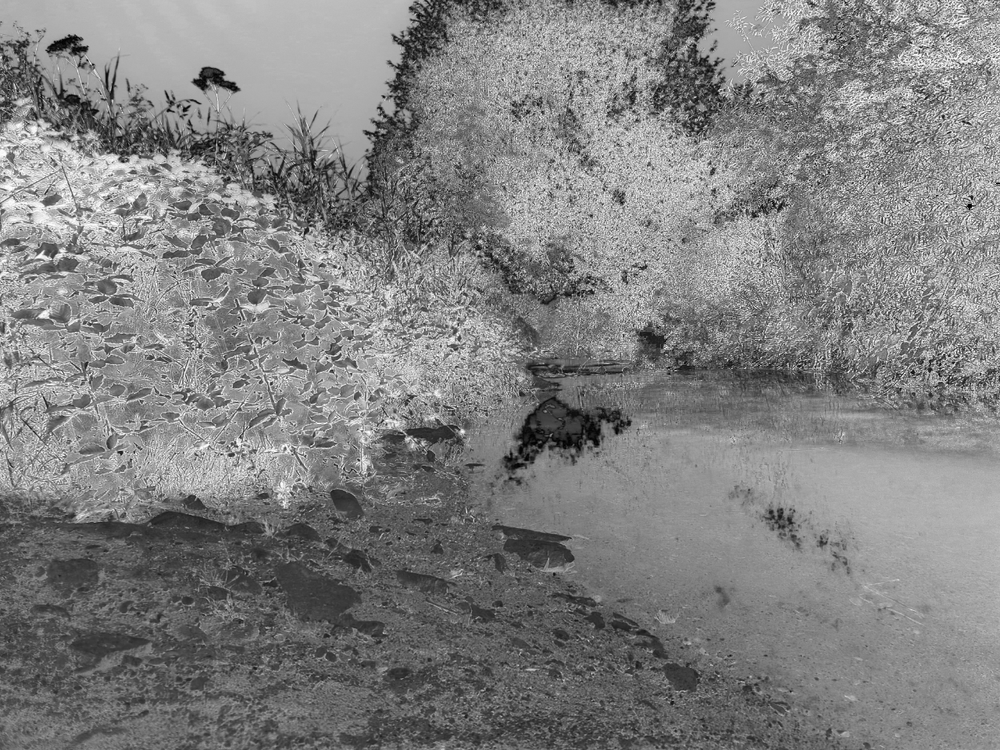
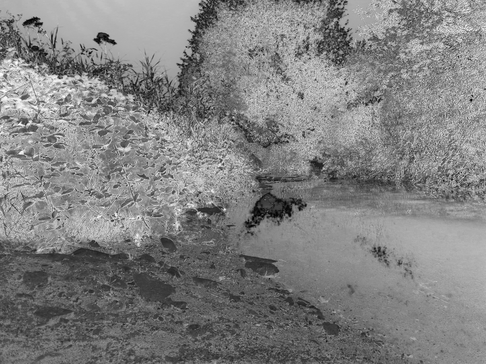
Sehr warm, Sonne strahlt hell, ich höre Wasser plätschern vorne, ich sehe ganz viele kleine Fische vor mir im Wasser schwimmen, kleine Staubpartikel schweben in der Luft, ich höre Vögel. 2 verschiedene.
Eine Libelle kreist um mich herum. Vögel scheinen miteinander zu reden. Sehr hohe Töne.
Es treibt ein Blatt auf dem Wasser. Hier sind auch kleine Fliegen über dem Sand am Fliegen. Hier ist Sand. Ich sitze auf dem Sand. Höre eine Wespe an mir vorbeiziehen. Es ist warm. Ein wenig zu warm, aber aushaltbar, ein kleiner dunkelblauer Schmetterling.
Es zieht ein leichtes Lüftchen durch. Die Pflanzen wehen auch leicht mit. Es treibt ein anderes dünnes Blatt im Wasser vorbei. Ein Ast, der im Wasser im Boden steckt wiegt sich langsam nach links und rechts. Das Ende, das nicht im Sand steckt. Die kleinen Fische sind überall.
Da sind zwei Libellen aneinander und fliegen vorbei. Eine blaue und eine grünliche. Auch viele Partikel schwimmen im Wasser vorbei.
Ich höre manchmal die Bäume rascheln, wenn der Wind stärker vorbeizieht. Jetzt schwimmen da auch zwei etwas größere Fische herum.
Eine kleine blaue Libelle sitzt rechts von mir auf einem kleinen dünnen Ast der halb im Wasser steckt. Die Staubpartikel wehen in mein Gesicht. Hier im Sand sind ein paar Fußabdrücke.
Jetzt hat sich eine grüne große Libelle vor mich auf einen größeren Stein gesetzt.
Der Sand vorne, wo das Wasser beginnt, ist noch nass. Das Wasser stand vor kurzem höher. Das Wasser ist nicht komplett klar. Ich sehe den Boden nicht an jeder Stelle. Da wo ich sehe, sind Sand und kleine Stöckchen und Fischchen und andere Sachen von Bäumen.
Die Blätter von den meisten Bäumen sind dunkelgrün. Auch viel Schatten auf der anderen Seite. Ich sitze in der Sonne. Der Himmel ist blau. Sehr klar. Ich sehe keine Wolken. Ein weißer Schmetterling fliegt links an den Sträuchern entlang. Er fliegt so unberechenbar. Und voller Panik scheint es. Sehen elegant aus, aber fliegen eher tollpatschig.
Die kleinen Fische schwimmen ganz am Ufer. Sie sind vielleicht 2cm lang. Der kleinste, vielleicht 1cm.
Ich höre einen Storch. Hier gibt es viele. Aber sehen tue ich keinen. Ich höre immer noch diesen Mini-Wasserfall.
Und es ist immer noch sehr warm. Die Fliegen fliegen um mich herum. Es nervt mich etwas. Ich empfinde es als störend. Auch die Wärme macht zu schaffen.
Die blaue kleine Libelle rechts neben mir auf dem dünnen Ast im Wasser glänzt in der Sonne. Und ein weiteres Blatt treibt im Wasser. Noch mehr Fliegen. Oder die gleichen. Kann ich nicht sagen.
Der Wind ist angenehm in dieser Hitze. Der Bach ist beruhigend mit dem Wasserplätschern. Der Schmetterling fliegt erneut durch. Als wäre er in Eile. Die Vögel reden wieder. Der andere ist schon sehr weit weg. Man hört ihn kaum.
Tag 2
KW 27 – 06.07.2025
 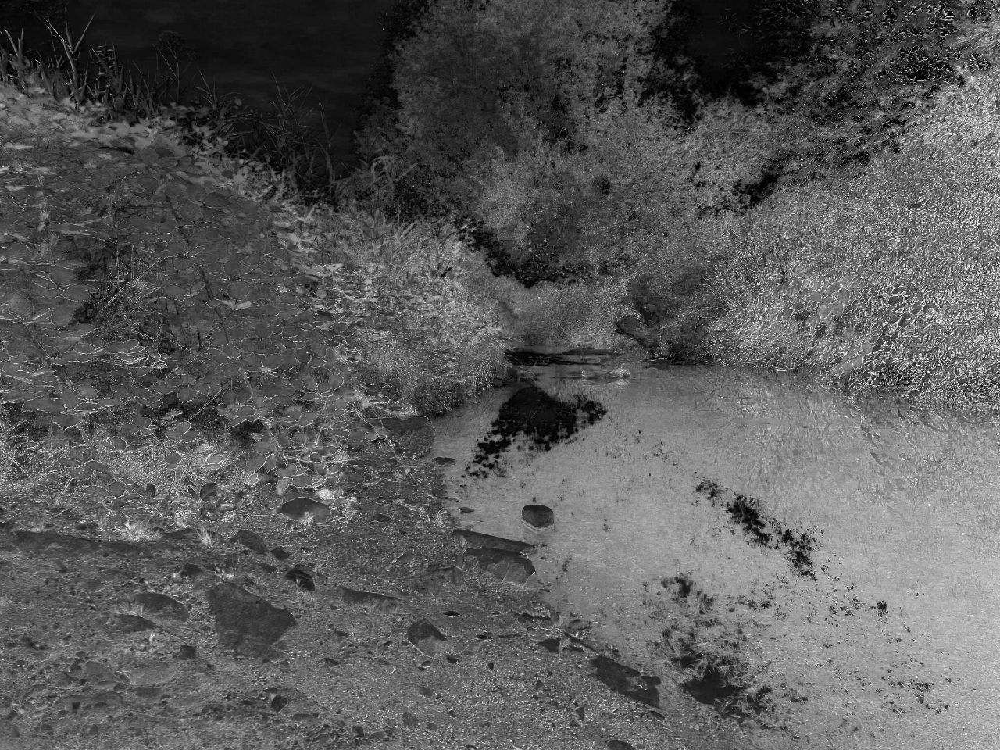
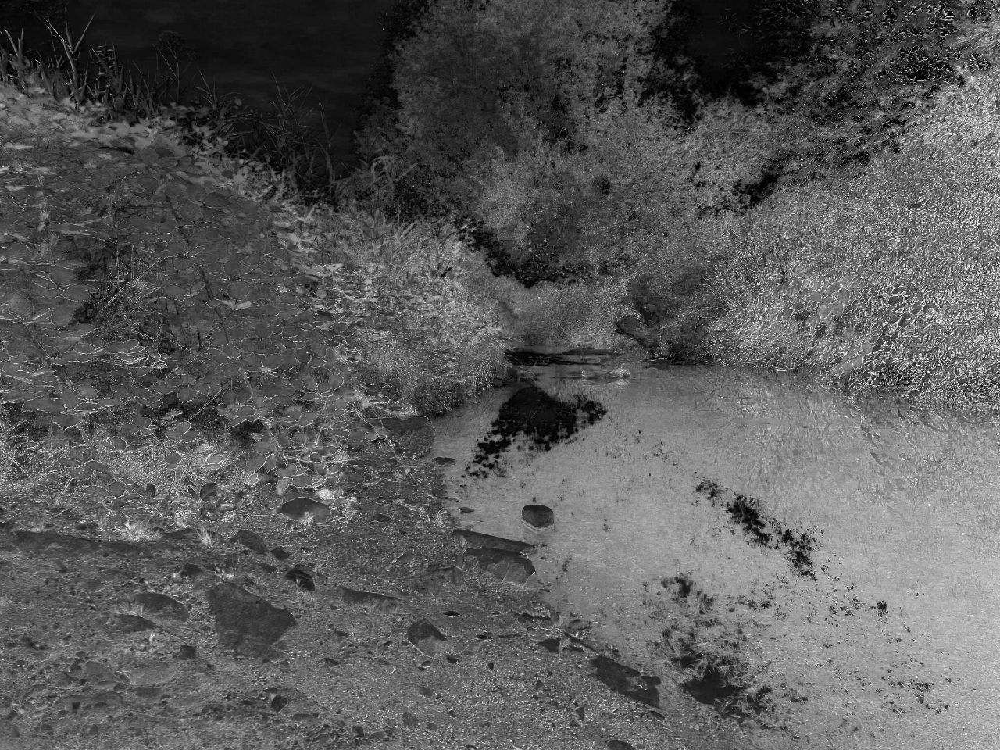
Heute ist es sehr laut. Der Wind weht stark und die ganzen Bäume und Pflanzen rascheln. Es fährt außerdem ein Bagger herum. Gelegentlich Autos.
Und immer mal wieder, wenn der Wind stark genug ist, dann scheint es zu regnen, so stark und vermehrt wie die Wassertropfen von den Bäumen über dem Bach hinunter zu fallen.
Das Wasser ist braun. Alles aufgewühlt vom Regen heute und den letzten Tagen. Viele Menschen laufen heute hier vorbei. Ich fühle mich unwohl, weil ich an so einem schönen Ort an meinem Handy tippe und ich die Blicke der älteren Leute beim Vorbeigehen zu deuten wissen scheine.
Es wechselt von starken Sonnenstrahlen und dem Gefühl der unwohl heißen Hitze auf mir & den Wolken, die die Sonne ganz bedecken und der kalte Wind, der mir Gänsehaut beschafft.
Jetzt fällt mir erst das Plätschern des Wassers auf, was die vorigen Male das erste war, was mir auffiel. Das Rückwärts-Fahr-Piepsen des Baggers unterbricht wieder meinen Gedankengang. Der Stein, auf dem ich sitze, wahrscheinlich das einzig trockene hier, ist sehr ungemütlich und störend.
Ich höre ein Flugzeug. Ich frage mich immer, wohin diese Leute wohl fliegen und was sie geplant haben und was sie für Erfahrungen machen werden.
Das Wasser steht heute wieder höher. Ich drehe mich ständig nach hinten um. Als würde ich Schritte durchs Gras hinter mir hören.
Hier wachsen auch Brennnesseln. Ich frage mich, ob diese weh tun oder nicht. Sollte ich kurz anfassen? Hier könnte ich tatsächlich meinen Gedanken mal Taten walten lassen. Warum auch nicht, oder? Jap, sie tun weh. Definitiv. Die obere Seite tatsächlich nicht. Unterhalb aua. Man könnte jetzt meinen, dass dies ein Zeichen von Dummheit wäre - so fühle ich mich zumindest auch - es tut schon in so weit weh, dass einen Großteil meiner Gedanken einnimmt, aber hätte ich jemals ganz sicher gewusst, ob diese Brennnessel weh tut, wenn ich es nicht probiert hätte? Klingt vielleicht immer noch fragwürdig, aber auf das gesamte Leben hinweg scheint es gar nicht so falsch.
Wenn man Dinge nicht probieren würde, wüsste man nicht, wie sie ausgehen würden. Vielleicht ja zu Gunsten eines selbst. Der Schmerz vergeht relativ schnell.
Ich halte meinen Finger ins Wasser. Es kühlt. Aber ein gewisses Unwohlsein kommt auf, je länger ich ihn im Wasser halte. Das Wasser ist unklar, ich sehe nicht, was darin schwimmt.
Tag 3
KW 28 – 13.07.2025
 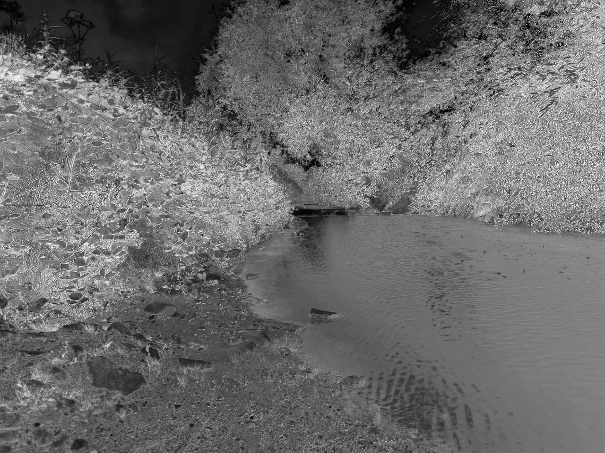
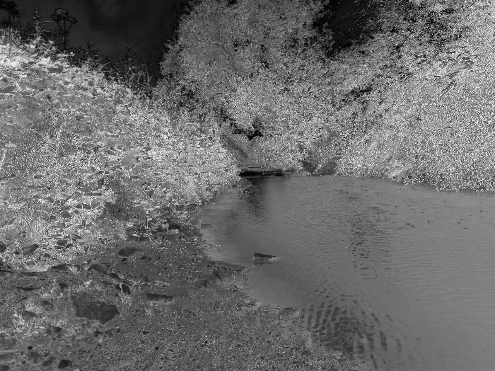
Ich höre wieder das ständige Rauschen des Wassers. Diesmal ist die Temperatur angenehm. So als gäbe es keine. Weder kalt noch warm. Einfach normal.
Ich höre kleine Insekten chirpen, immer mal wieder. Ich höre die Autos in der Ferne. Dann wieder ein Insekt.
Es sieht sehr trostlos hier aus. Der Himmel ist komplett bewölkt. Ich habe leichte Rückenschmerzen. Eine Wespe schwirrt um mich herum und ich fühle mich unwohl.
Das Wasser fließt langsam. Die Wespe ist immer noch hier.
Die Bäume und Blätter sind so traurig und ungezähmt. Ich frage mich, ob sich jemand um sie kümmert. Sie mal wieder kürzt.
Die Blätter des großen Baumes wehen leicht hin und her. Von dem Wind bekomme ich aber nichts mit. Ich höre leises Zwitschern von Vögeln.
Es fliegen wieder viele Partikel in der Luft herum. Aber auch im Wasser liegen sie. Ganz ganz viele. Und treiben langsam entlang.
Der Sand vor meinen Füßen ist feucht bis nass. Da wo ich sitze und hinter mir ist alles ganz trocken. Ich sehe die Spiegelung des Himmels im Wasser. Aber die Oberfläche bewegt sich immer, sodass es nicht ganz klar ist. Das Wasser wirkt wieder bräunlich. Aber man kann an einigen Stellen den Boden sehen.
Die kleinen Fische vom letzten Mal sind nicht zu sehen. Auch die Libellen nicht. Fahrradfahrer fahren hinter mir vorbei.
Ein winziger weißer Schmetterling auf der anderen Seite des Wassers. Ich glaube, so klein habe ich noch keinen gesehen. Ständig juckt es mich irgendwo am Hals oder an den Beinen. Nicht dass es Insekten sind, die an mir hochkrabbeln.
Immer wieder Autos, die in der Ferne durchfahren. Jetzt auch die Stimmen von zwei Personen. Aber sehr weit weg. Ich kann gar nicht entziffern, was sie sagen.
Jetzt spüre ich den Wind immer mehr. Meine Haarsträhnen wehen ständig in mein Gesicht. Es kitzelt und ich muss sie zurückstreichen aus dem Gesicht.
Heute könnte es regnen. Aber bitte nicht, während ich hier sitze.
Die Sträucher sind um einiges gewachsen. Ein komplettes Durcheinander. Ich muss an Zecken denken. Die Grasbüschel auf dem sandigen Weg, der hier runter zum Wasser führt, werden auch immer länger und mehr.
Jetzt höre ich einen Vogel. Er hört sich an wie ein Affe. Nur als Vogel.
Wenn ich Vögel identifizieren könnte, wäre das ziemlich cool.
Nun fliegt hier eine Hummel vorbei. Zwischen den zahlreichen Partikeln in der Luft. Und zwei Bienen an der einzigen Blume in diesem großen Gestrüpp.
Ein lautes Motorrad stört die Idylle. Jetzt bin ich wieder erwacht. Und höre wieder das laute Rauschen des Wassers.
Tag 4
KW 29 – 20.07.2025
 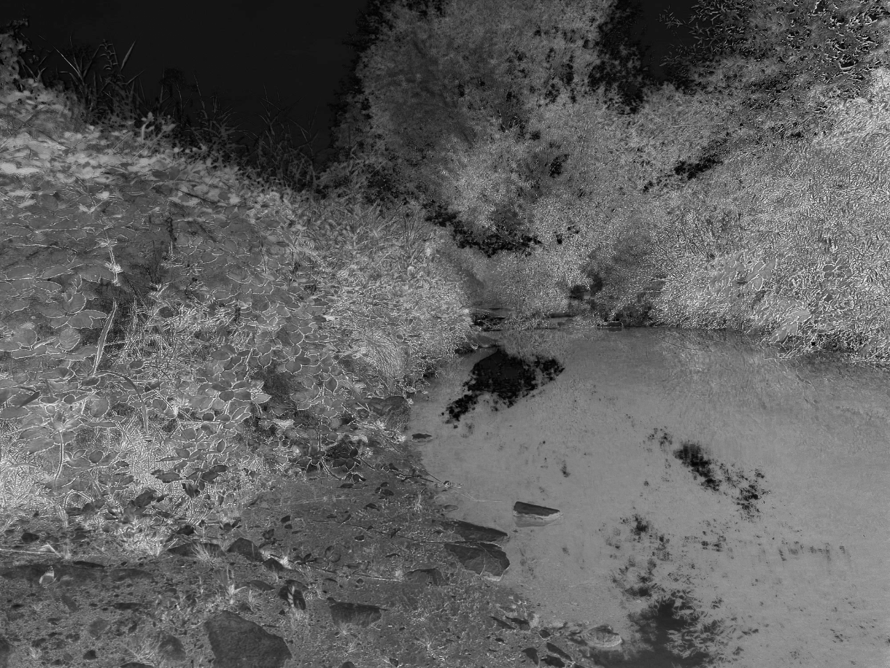
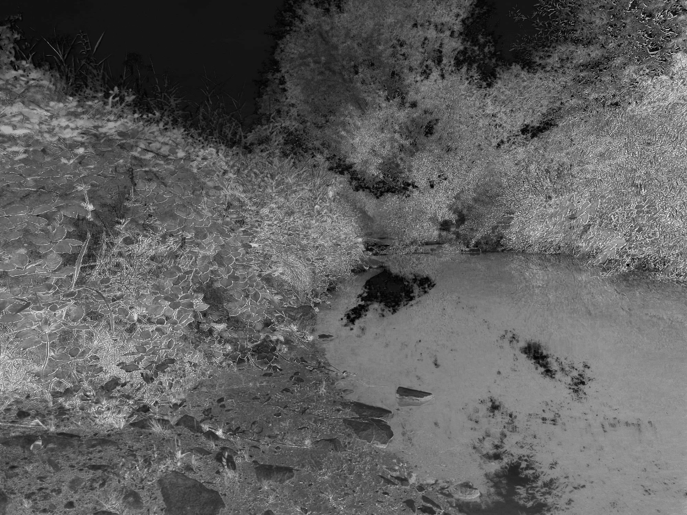
Es ist ziemlich warm. Die Sonne ist sogar nur hinter den Wolken, aber die Luft fühlt sich einengend an.
Das Wasser heute ist wieder etwas klarer. Man kann wieder einzelne kleine Fische sehen.
Ein großer orange/schwarz/weißer Schmetterling leistet mir Gesellschaft und fliegt gelegentlich um mich herum. Warum können nicht alle Insekten so einladend schön aussehen.
Mittlerweile sind vor und rechts von meinem Platz an dem ich jedes mal sitze Ranken-Pflanzen gewachsen, welche an sich selbst oder anderen Pflanzen hinaufklettern. Sie haben alle bereits hier wachsenden Pflanzen mehrmals umkringelt.
Inzwischen sehen die gesamten Pflanzen hier sehr verwahrlost aus. Ein Ast des Baums über dem kleinen "Wasserfall" liegt auch nun dort im Wasser.
Es wird immer unerträglicher mit der Hitze.
Auch Vögel und Flugzeuge sind wieder zu hören. Ein leichter Wind trägt einen modrigen Schlamm/Wasser-Geruch mit sich. Der Schmetterling bewegt seine Flügel unaufhörlich ganz elegant auf und wieder zu.
Links neben mir wachsen Brombeeren. Sie wachsen zudem hoch genug, dass wohl kein Hund darauf gepinkelt hat. Ich werde eine probieren. Sie ist leicht warm, schmeckt etwas wässrig. Ist weich. Aber der Geschmack ist gut. Ich nehme noch eine zweite. Diese ist leicht säuerlich. Ein winziger Kern hat es sich zwischen zwei meiner Zähne gemütlich gemacht. Die restlichen Brombeeren lasse ich den Insekten.
Auf zwei weiteren saßen braune Käfer. Sie ähneln trockenen und abgestorbenen kleinen Blättern. Eine Hummel fliegt sehr nahe an mich und sucht womöglich eine Blume. Die gibt es hier auf meiner Seite aber nicht. Und sie fliegt weiter.
Lange habe ich hier keine Libellen mehr gesehen, obwohl zuvor einmal zahlreich welche um mich herum geschwirrt sind.
Ein Stück Treibholz schwimmt vor mir vorbei. Ich wundere mich, ob es sich schleimig angefühlt hätte. Aber vor lauter denken ist es bereits zu weit weg getrieben.
Der Schmetterling sitzt immer noch neben mir. Im Schlamm.
Tag 5
KW 30 – 27.07.2025
 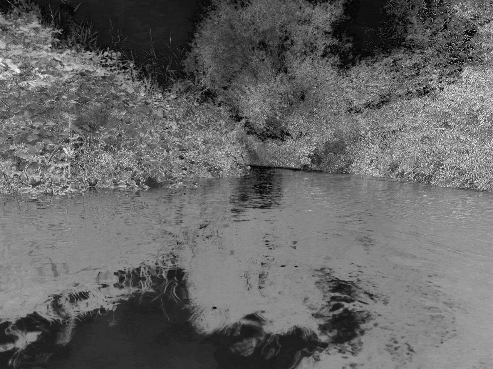
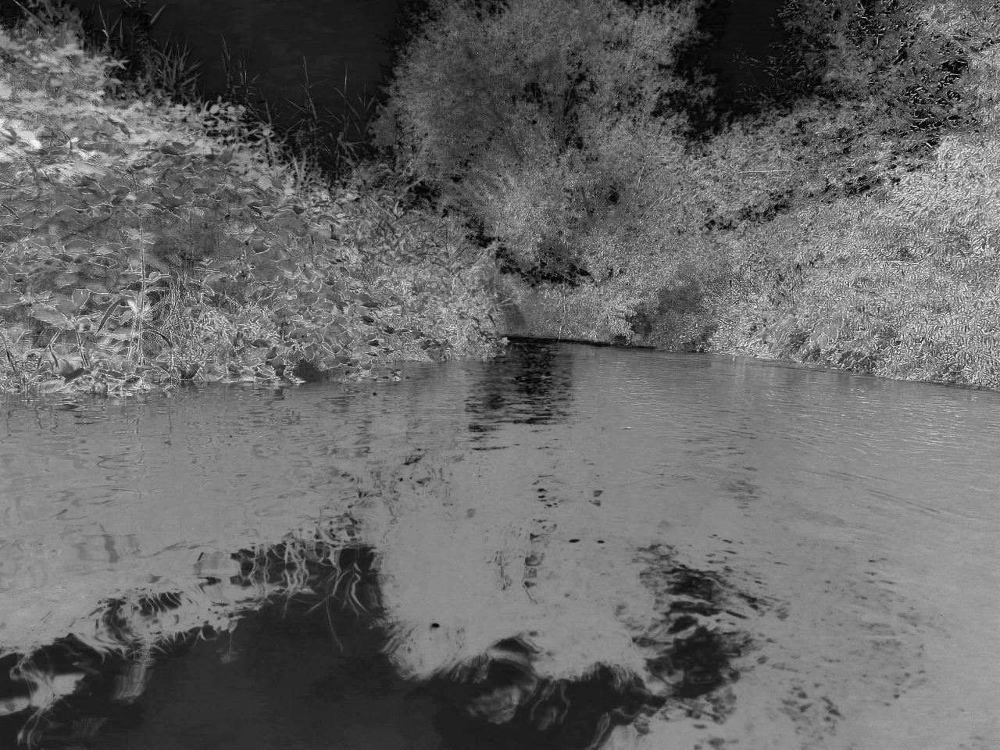
Das Wasser rauscht so laut. Es ist hier nur am Regnen. Zu meiner üblichen Zeit regnet es glücklicherweise gerade nicht.
Ich musste meinen Sitzplatz ändern, da meiner gute 30cm unter Wasser steht. Das überrascht mich, denn selbst vor einer Woche, als es dauernd am regnen war, hatte mein Platz noch gut Abstand zum Wasser.
Das Wasser in der Mitte strömt schnell vorbei, jedoch scheint das Wasser, welches sich ganz seitlich, hier auf meiner Seite in dieser Ecke befindet, zu stehen. Es ist nicht Teil des Stroms, sondern bleibt zurück, während das restliche Wasser seinen Weg geht.
So haben sich bestimmt schon einige Menschen gefühlt. Mich eingeschlossen.
Ich hoffe, meine Schuhe werden diesmal nicht ganz so dreckig. Letztes Mal musste ich sie sauber machen, so schlammig waren sie.
Ein Mann stand gerade ein paar Meter hinter mir mit einer Angel. Er hatte eine Pfeife im Mund. Ich frage mich, ob ich ihm den Platz genommen habe. Aber gesagt hat er nichts. Wir haben uns lediglich kurz gegrüßt. Ich mit einem Hallo und er mit einem Nicken. Ich frage mich sowieso, was man hier großartig fangen könnte. Aber da weiß er sicherlich mehr.
Das laute Rauschen des Wassers rechts ist viel lauter als der kleine Wasserfall links. Den höre ich gar nicht. Normalerweise hört man von rechts nichts als ein paar Autos. Selbst diese werden übertönt.
Außer Vögel hört und sieht man hier keine weiteren Tiere.
Das Wasser so aufgewühlt, dass auch keine Fische sichtbar sind. Sie müssten jetzt so viel mehr Platz haben. Ich frage mich, ob es ihnen bewusst auffällt und sie sich darüber freuen.
Einige Pflanzen haben schöne glitzernde Wassertropfen auf sich sitzen und manche haben sie nicht. Die einzigen Pflanzen, auf denen sie schön sitzen bleiben, haben längliche, schmale Blätter, die sich vorne zuspitzen. Ihre Struktur ist auch länglich. Mehrere Streifen, die vom Anfang des Blattes am Stängel, nach vorne zum zugespitzten Ende verlaufen.
Meine Füße sind eingeschlafen und meine Knie schmerzen. Ich saß in der Hocke. Ich stehe auf und mir wird kurz schwarz vor Augen. Und ich bemerke es.
Es ist so viel Wasser im Bach, dass es links gar keinen Wasserfall mehr gibt.
Meine Füße kribbeln. Viele längliche, schmale Äste fließen zügig vorbei.
Tag 6
KW 31 – 03.08.2025
 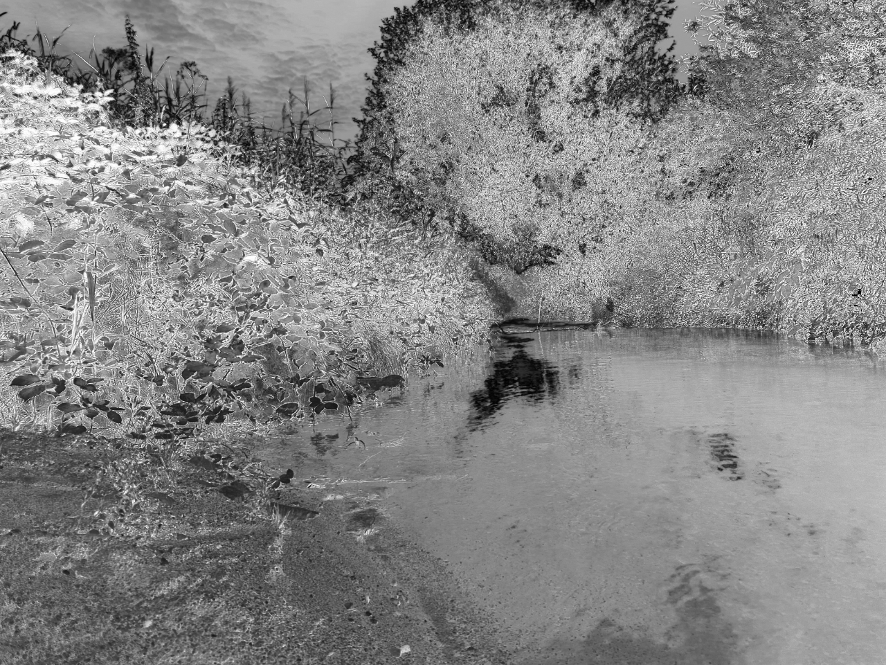
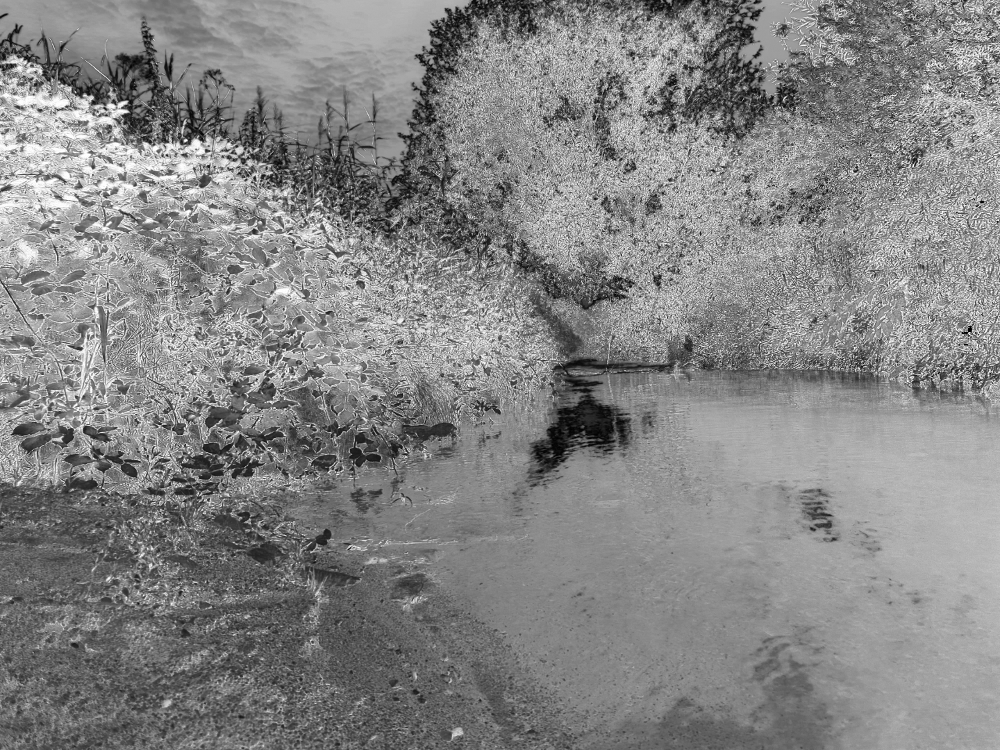
Es ist nicht super heiß, aber relativ warm. Ich habe das Gefühl, dass die Sonne aber richtig stark ist. Ich spüre sie sehr auf meiner Kopfhaut.
Meine Haare sind noch nass vom Duschen. Ich habe mir zwei geflochtene Zöpfe gemacht. Da wo die Zöpfe auseinandergehen, am Hinterkopf, ist meine Kopfhaut sichtbarer. Das spüre ich jetzt.
Ein leichter Wind kommt immer mal vorbei. Das Wasser steht wieder niedriger und man kann etwas hineinsehen.
Die Fische kommen langsam näher an mich, da ich mich kaum bewege. Sie scheinen größer geworden zu sein seit dem letzten Mal, an dem ich sie gesehen habe. Aber auch wieder winzige Fische sind zu sehen.
Ich sehe auch wieder viele Libellen. Sie waren eine Zeit lang weg, als es nur am Regnen war.
Das Gestrüpp ist seit letzter Woche enorm gewachsen. Es ist mir auch wieder möglich an meinem ursprünglichen Platz zu sitzen.
Es fällt mir besonders wieder das Wasserrauschen an dem kleinen Wasserfall auf. Ich höre aber auch kaum andere Geräusche.
Vögel zwitschern auch nur ganz leise und selten. Das Wasser glitzert so in der Sonne. Es fällt mir heute sehr schwer meine Wahrnehmungen zu teilen, da vieles wieder so ist wie zuvor schon einmal. Und die Eindrücke sind sehr gedämpft, da wenig Geräusche und Dinge zu passieren scheinen.
Während sich hier beim Wasser kaum etwas tut, hat sich außen herum viel verändert.
Auf der gegenüberliegenden Seite, wo ein anderer Bachteil fließt. Da stehen viele Bagger und Sandsäcke und große Rohre. Und hier an diesem Bach scheint alles unberührt und natürlich.
Beim Aufstehen habe ich die Fische verschreckt, jedoch wollte ich wissen, wie sich das Wasser anfühlt. Es ist relativ kalt, aber angenehm. Ich hätte gedacht es wäre wärmer, dadurch dass die Sonne drauf strahlt und das Wasser nicht tief ist.
Ich wirbele den Sand im Wasser auf und die aufgewirbelten Partikel glänzen silbern. Es legt sich sehr schnell wieder. Überraschenderweise. Und wird wieder klar.
Es laufen Menschen hinter mir vorbei. Mit einem kleinen weißen Hund.
Kaum bin ich vom Wasser weg, erscheinen die winzigen Fischlein wieder. Sie scheinen nicht so sehr gestört von mir wie die größeren Fische. Ich strecke meinen Arm über das Wasser, um einen Schatten zu erzeugen. Die Fische schwimmen vor meinem Schatten weg.
Und immer wieder ziehen abgebrochene Pflanzen, Äste und Blätter im Wasser vorbei.
Tag 7
KW 32 – 10.08.2025
 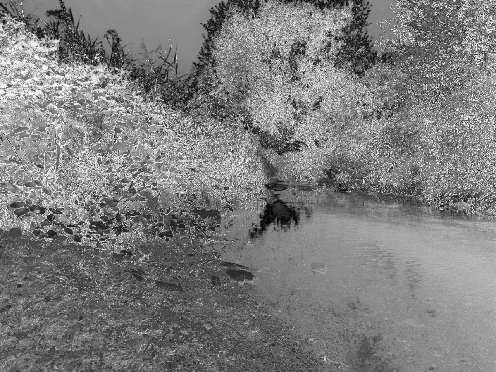
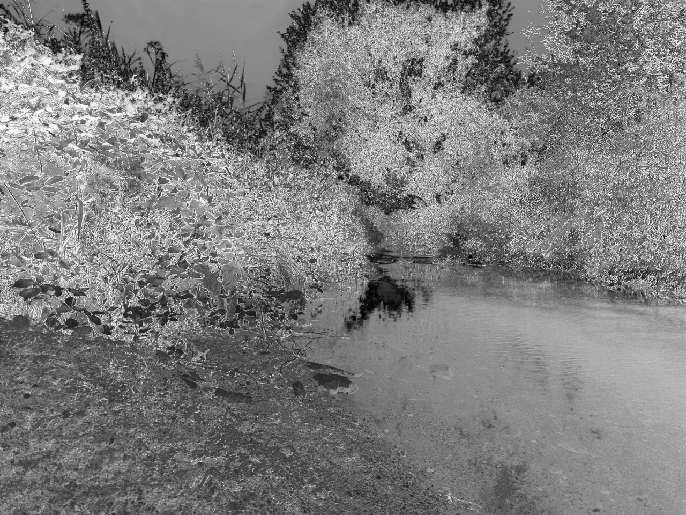
Es fühlt sich ein wenig kühler an als letzte Woche. Es ist immer noch warm, aber angenehm. Vielleicht liegt es aber auch daran, dass ich dieses Mal keine schwarzen Klamotten trage.
Das Wasser ist so klar wie ich es zuvor noch nicht gesehen habe. Ich kann nun erkennen, wie tief der Abschnitt hier wirklich ist.
Ich hatte aber schon vermutet, dass es nicht so tief ist. Nächstes Mal könnte ich ein Handtuch mitnehmen und vielleicht mal rein stehen.
Ich sehe nun aber auch, wie viele Fische und Fischlein allein nur in diesem kleinen Teil leben. Ich könnte sie überhaupt nicht zählen, so viele sind es. Die meisten sind aber so winzig. Ich sollte mal herausfinden, was das für Fische sind. Dann könnte ich sie benennen.
Es gibt hier nun auch zahlreiche Schmetterlinge, die um mich herum flattern. Und die ganzen Fische, die näher kommen, da ich so still sitze.
Ich fühle mich wie eine Disney Prinzessin.
Am schönsten ist dieser winzige kleine hellblau/lila Schmetterling. Ich frage mich, ob er auf meine Hand sitzen würde, wenn ich ganz still bleibe.
Ich habe meine Hand auf den leicht feuchten Sand gelegt. Nachdem ich sie wieder gehoben habe, habe ich den Sand abgestreift.
Jetzt schaue ich mir meine Hand an und sie glänzt. Als hätte ich kleine Glitzerpartikel auf ihr. Die Natur ist schon etwas unglaubliches. Man sollte sich wirklich die Zeit nehmen, sie genauer zu betrachten. Das habe ich vorher viel zu selten getan.
Ich fühle mich beruhigt. Und heute weiß ich gar nicht, wohin ich blicken soll.
Diese kleinen Fische, die schönen Schmetterlinge, das fließende Wasser, die Blätter die vom Baum darüber ins Wasser herab fallen und dann vom Wasser getragen werden, die kleinen Staubpartikel in der Luft, den Vogelgeräuschen hinterher, den Pflanzen die im leichten Wind hin und herschaukeln, der Himmel der klar und keine Wolken aufzeigt.
Können Schmetterlinge neugierig sein? Wenn ja, dann ist es dieser auf jeden Fall. Aber irgendwie stört es mich nicht, obwohl er mich ständig zu umkreist. Bei einer Fliege zum Beispiel würde ich mich total unwohl und genervt fühlen.
Ist das das pretty privilege der Insekten?
Tag 8
KW 34 – 24.08.2025
 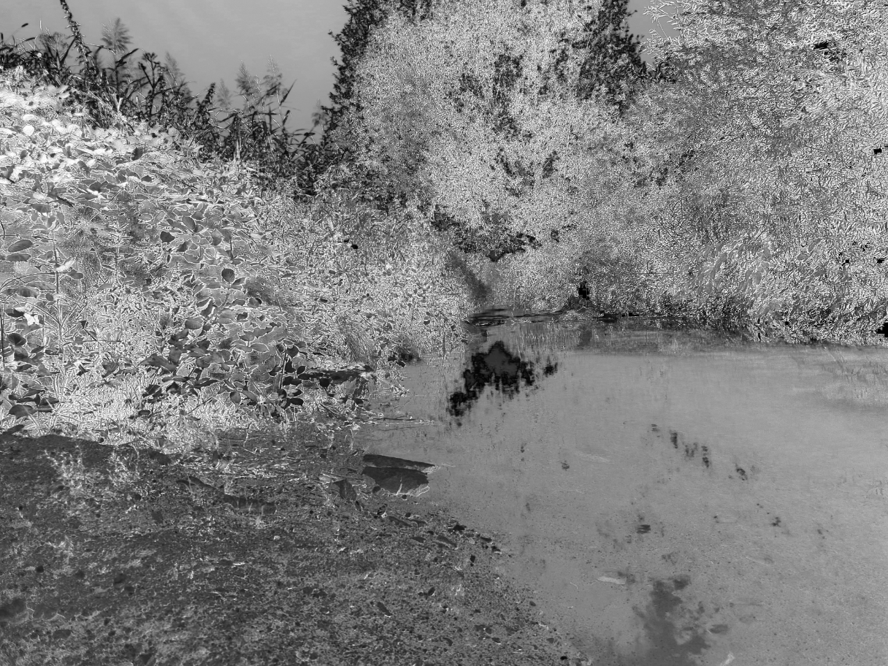
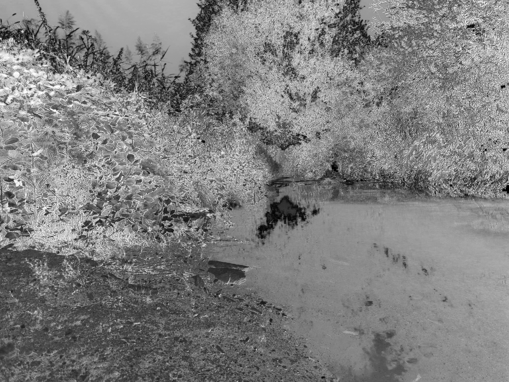
Es weht ein leichter Wind. Es war einige Zeit kühler, aber nun wärmt es sich langsam wieder auf. Ich dachte schon der Sommer sei wieder um.
Links neben mir ein Border Collie der an einer anderen Stelle beim Wasser ist und schnüffelt.
Er jammert aber, ich weiß nicht warum. Jetzt schaut er mich an. Sie haben so lange Haare.
Ich bemerke, dass gegenüber, da wo sich eine riesige Pflanzen- und Baumwand hochzieht, der untere Teil der Pflanzen, die wahrscheinlich irgendwann das Wasser berührten, weißlich erscheinen. So als läge eine Schicht Kalk auf ihnen.
Eingetrocknet.
Ich frage mich woher das kommt.
Die winzigen Fische schwimmen nur so umher. Gelegentlich berührt eines die Oberfläche des Wassers und es erscheinen winzige Wellen, die kreisförmig von der Mitte aus ausgleiten.
An manchen Stellen kann man etwas algigen Boden oder Stein sehen. Aber wirklich nur ganz wenig.
Es ist weniger weich und schleimig als ich dachte. Ich sehe nun fünf größere Fische herschwimmen. Ich bewege nur meine Finger, um sie nicht zu verscheuchen. Doch da erschrecken sie sich an etwas anderem und verschwinden sofort.
Ich frage mich, warum die kleinen Fische schreckresistenter sind.
Eine grüne und eine blaue Libelle kleben gefühlt aneinander. Wie sie es schaffen gemeinsam zu fliegen erstaunt mich.
Wie viel Gewicht sie wohl tragen können.
Ich sehe auch nicht ob beide ihre Flügel bewegen. Das wäre auch bemerkenswert, so gleichzeitig und trotzdem so schnell fliegen zu können.
Die Kletterranken wachsen sehr schnell. Einige bewegen sich am sandigen Boden in Richtung Wasser.
Langsam schmerzt mein Rücken ein wenig. Mir ist nicht aufgefallen wie unvorteilhaft ich gesessen bin.
Ich sehe sehr oft einen Mann hier angeln. Ich habe herausgefunden, dass er regelmäßig hier angelt. Da frage ich mich nun was er versucht zu angeln und ob er überhaupt etwas fängt.
Das Wasser ist nicht gerade tief und die größten Fische sind nichtsdestotrotz relativ klein, wenn man daran denkt sie essen zu wollen. Vielleicht angelt er Köderfische. Das würde Sinn ergeben.
Heute ist hier viel los. Hier kann man gut laufen, vor allem mit Hunden. Hier stehen einige Autos leer da.
Leise hört man Vögel in der Ferne.
Ich habe einen Minz Kaugummi im Mund. Den hätte ich nicht jetzt kauen dürfen. Ich merke, ich rieche so nur sehr wenig, da alles von Minze übertönt wird.
Tag 9
KW 35 – 31.08.2025
 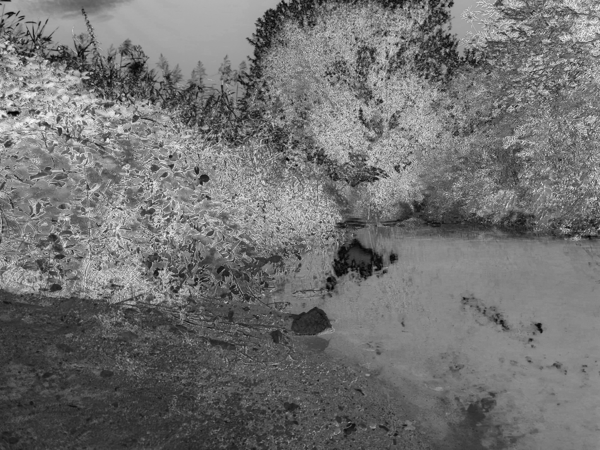
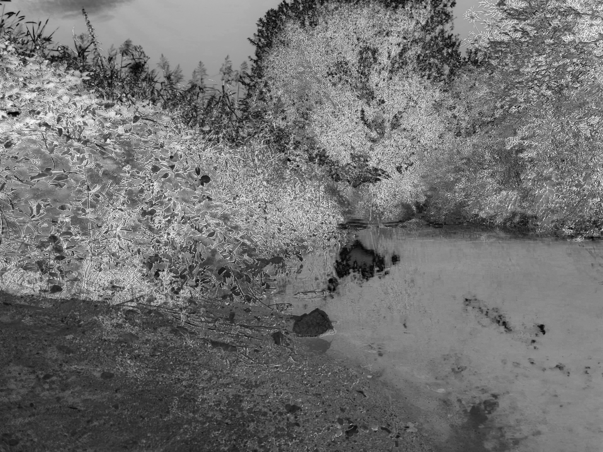
Es hat vor ein paar Tagen geregnet. Das sieht man sofort. Es ist etwas mehr Wasser vorhanden, obwohl es schon sehr heiß ist, vor allem heute wieder.
Es fällt mir auch auf, dass das Grün der Pflanzen und Bäume nicht mehr so quietsch grün ist wie anfangs. Jetzt ist es eine eher gelbgrünliche Farbe.
Neben mir sieht es so aus als lägen hier Ausscheidungen eines Pferds. Es muss aber kleiner sein. Vielleicht eine Ziege oder ein Schaf? Auf jeden Fall ein Tier, welches sich von Gras und Heu ernährt.
Ich bin in der Stadt groß geworden und hatte nicht wirklich Kontakt zu diesen Tieren, um es genau zu erkennen.
Ein großer weißer Schmetterling kreist um mich herum.
Ich habe schwarze Klamotten an und bereue es. Vor allem mein rechtes Knie brennt vor Hitze. Ich muss mich immer zu bewegen. Es ist sehr unangenehm.
Außer dem Wasserplätschern hört man jedoch kaum Geräusche.
Es riecht zumindest leicht nach Bachwasser. Es ist schon sehr verlockend in den Bach zu stehen. Ich frage mich wie der Boden sich anfühlt. Weich? Schleimig? Kiesig? Man kann es nicht genau erkennen.
Das Wasser ist angenehm an meinen Füßen. Man sinkt leicht ein. Einige Steinchen liegen darin, jedoch machen die mir nichts aus, obwohl ich sehr empfindliche Füße habe.
Es dauert nur ein paar Sekunden bis das Wasser sich schon neutral anfühlt.
Ich fühle mich generell nicht so wohl in Flüssen und Seen.
Ich bewege mich nicht und die kleinen Fische kommen immer näher. Werden sie mich berühren? Der winzigste Fisch kommt am nächsten.
Zu nah für meinen Geschmack.
Selbst wenn ich meine Füße bewege bleibt er sehr nah. Das gefällt mir nicht so sehr. Ich versuche es zu ignorieren.
Der Sand wirbelt sich leicht auf bei jedem Schritt und zu meiner Überraschung entweichen einige Luftblässchen dem Boden unter mir. Als ich mich am Rand wieder hinsetze sehe ich wie knallrot meine Knie sind.
Da wo ich stand befinden sich schon wieder kleine Fische und ein paar größere. Trotzdem klein. Als würden sie erkundschaften was sich verändert hat.
Tag 10
KW 36 – 07.09.2025


Ich sehe mehrere Vögel vorne am Bach auf einer kleinen Insel. Sie fliegen der Reihe nach hoch auf den ersten Ast über ihnen. Es waren circa 6 Stück.
Es scheint langsam kühler zu werden. Es scheint außerdem dunkler als sonst zu sein.
Der Boden auf dem ich sitze ist kalt. Und wahrscheinlich auch feucht.
Ich sehe eine winzige Ameise im Gras und mir fallen die äußert winzigen kleinen Fischlein im Wasser auf.
Ebenso ein kleiner gut getarnter brauner Schmetterling im Gestrüpp und ein kleines Insekt welches kopfüber an einem Halm krabbelt.
Ich merke wie mir Dinge schnell auffallen. Ist es weil ich den Ort nun scheinbar auswendig kenne oder liegt es daran, dass ich ihm sehr viel genauere Aufmerksamkeit schenken kann, weil ich das äußere bereits gut kenne?
Ich sehe auch dass einige Pflanzen schon braun werden und absterben. Das liegt vielleicht aber auch an den Ranken-Pflanzen, die Platz und Nährstoffe wegnehmen.
Die Äste bewegen sich sanft im leichten Wind. Ich merke wie sich die Dinge hier verändern.
Man hört neben dem Wasserplätschern noch ein Insekt. Und auch den leichten Wind hat man in den Ohren.
Immer mal wieder ertönen wieder die Autos und man hört in der Ferne Menschen gedämpft reden. Doch noch immer fehlt das zwitschern der Vögel.
Es befindet sich jetzt generell etwas mehr Wasser im Bach, da Arbeiter Wasser von der anderen Seite hier nun rüber leiten, anstatt ihn weiter fließen zu lassen.
Ein Mann mit einem Hund hat sich neben mich gestellt. Der große Hund, verschiedene Brauntöne, vor mich ins Wasser. Er ist sehr süß und flauschig.
Das Sand im Wasser hat sich aufgewirbelt, aber schnell wieder gelegt.
Der Mann scheint mich abgeschirmt zu haben, sodass ich nicht nass wurde, als der Hund sich ausgeschüttelt hat, nachdem er aus dem Wasser kam. Eine Abkühlung wäre aber wohl nicht schlecht gewesen.
Es ist generell nicht extrem warm, aber die Sonne prallt sehr stark herab. Die einzige noch weiße Blüte im ganzen Gestrüpp ist nun in voller Blüte.
Das Gestrüpp selbst jedoch ist sehr durchwachsen und sieht sehr ungepflegt aus im Vergleich zur anfänglichen Zeit, die ich hier verbracht habe.
Tag 11
KW 37 – 14.09.2025
Es ist seit langem mal wolkig und die Sonne scheint nicht um diese Uhrzeit. Es sieht mittlerweile richtig trostlos aus.
Die Pflanzen verwildert und auf dem oberen Hang hier herunter scheinen die Pflanzen ein Stück abgesägt worden zu sein. Sehr chaotisch.
Einige Pflanzen sind auch vertrocknet und abgestorben.
Das Wasser von rechts, welches ja nun hierdurch geleitet wird von der anderen Seite, anstatt dass dieser geradeaus weiterfließt, schiebt das Wasser laut nun hier durch an der Stelle, an der ich stehe am Bach. Das Wasser steht auch höher, aber nicht am höchsten.
Die nassen Stellen verraten mir aber, dass das Wasser bereits höher stand.
Auch die weißen Verfärbungen der Blätter am Rand. Man sieht kaum in das Wasser hinein. Nur die ersten 10cm am Rand.
Auch Fische sind nicht zu sehen.
Ein kalter Wind zieht immer wieder durch. Heute habe ich eine warme Jacke an. Es ist angenehm warm für mich.
Meine Beine schmerzen langsam vom hinknien und ich stehe auf.
Zwei kleine grüne Insekten sind auf die Wasseroberfläche gesprungen. Es sieht nicht aus als würden sie generell dort hingehören. Und schon sind sie fortgetrieben.
Das Wasser fließt in die verschiedensten Richtungen. Sehr ungleichmäßig und nicht der gesamten Fließrichtung hinterher.
Die kleinen Wellchen treffen überall aufeinander und es wirkt sehr durcheinander.
Einige biegsame Äste auf der anderen Seite ragen ins Wasser. An ihnen hängen lange getrocknete Pflanzen, welche einmal im Bach trieben und hängengeblieben sind.
Hinter mir, an dem Weg wächst Mais. Mir fällt auf, dass er so gut wie ausgewachsen aussieht. Bald würde man ihn ernten und die Pflanzen wären weg.
Anders als diese Pflanzen hier bei mir. Sie haben im ersten Blick keinen Nutzen für die Menschen. Ich erinnere mich, dass an einer Früchte hingen, aber auch diese wurden wahrscheinlich nur von Tieren gegessen. Und von mir.
Ich höre nun einen Vogel. Er ist sehr nah. Lange habe ich keinen Vogel mehr hier gehört. Vielleicht liegt es an den Bauarbeiten am Bach, die rechts diesen Abschnitt des Bachs schneiden, dass sich die Vögel von hier entfernt haben.
Letztendlich kommt die Sonne etwas raus und ich spüre die angenehme Wärme auf meiner rechten Gesichtshälfte.
Tag 12
KW 38 – 21.09.2025
Es ist der erste relativ kalte Tag. Es ist nur am Regnen. Teilweise sogar sehr stark.
Trotzdem ist das Wasser niedriger als erwartet. Ich kann heute auf meinem üblichen Platz sitzen.
Meine Fingerspitzen schmerzen leicht von der Kälte. Der Wind der hier durchzieht ist eisig.
Zu hören gibt es nur ein kleines Vögelchen und zu sehen gibt es keine Tiere.
Das Wasser strömt sehr schnell, rechts hinten bei der Umleitung des Wassers strömt es umso mehr hier rein.
Ich bin sehr müde. Hatte ein paar schlaflose Nächte, aufgrund eines kleinen Welpen, der bei mir kürzlich eingezogen ist.
Der Wind ist zwar kalt, aber angenehm gegen die Müdigkeit. Ich habe zudem eine große Vorfreude wieder zurück zu meiner kleinen Hündin zu kommen.
Außerhalb sieht es sehr trostlos aus, aber das beeinflusst mich kaum aufgrund meines fröhlichen Gemütszustandes.
Das Wasser fühlt sich auch sehr kalt an im Vergleich zu den vorigen malen. Das natürlich nur vom Gefühl. Es ist jedoch noch nicht so kalt außerhalb, dass sich meine Finger nicht von der Kälte des Wassers erholen können.
Ein paar Pflanzen scheint das ganze Wasser gut getan zu haben, einigen anderen eher nicht. Das Wasser ist auch heute kaum zu durchschauen.
Es ist braun, die Oberfläche glänzt jedoch aufgrund des reflektierenden Lichts vom Himmel. Aber nicht so schön wie wenn die Sonne darauf strahlen würde.
Das Wasser an der Oberfläche fließt ganz durcheinander, auch der Wind schiebt das Wasser chaotisch umher. Ich finde es etwas schade, dass ich nichts mehr von den Fischen sehe und somit wahrscheinlich erst wieder in einer Weile ein Update sehen kann.
Ein paar kleine Blässchen sitzen auf den kleinen Pflänzchen am Rand unter Wasser. Ein paar längere Pflanzen bewegen sich elegant wie Quallententakel im Wasser.
Das mochte ich sehr gerne als ich klein war im Schwimmbad. Wenn meine langen offenen Haare sich wie bei einer Meerjungfrau im Wasser wandten.
Das Wasser schien heute schon höher zu stehen. Wahrscheinlich in der Nacht nachdem es so geschüttet hatte. Um diese Uhrzeit hier immer habe ich großes Glück, dass das Wetter meistens gut mitspielt und kein oder bzw kein starker Regen fällt.
Tag 13
KW 40 – 05.10.2025


Das Wasser ist heute wieder klar. Beziehungsweise nur die linke Hälfte in Flussrichtung. Die rechte Hälfte hat einen Schleier von aufgewühltem Dreck über sich. So habe ich das zuvor noch nie gesehen.
Ich höre eine laute Kettensäge, genau auf der anderen Seite des Bachs, hinter dem hohen Gestrüpp und den Bäumen.
Die haben schon zuvor an den Ästen manuell gesägt als ich hierher gelaufen bin.
Ich fühle mich sehr schwach. Ich bin krank. Dennoch tut es gut hier zu sein und den Weg auf mich genommen zu haben.
Auch wenn es nun laut ist, kann ich zumindest die Aussicht und das Wetter genießen. Es ist sehr angenehm von der Temperatur. Ich bin auch warm gekleidet mit einem Schal. Es ist nicht zu warm oder zu kalt.
Das Wasser ist trotzdem überraschend niedrig. Es hat immer mal wieder geregnet.
Auf der linken Seite, meine Seite, wo das Wasser klar ist, scheint der Bachboden trotzdem unglaublich dreckig. Das ganze Moos, die kleinen und großen Steine sind nur von ihrer geschätzten Textur aus zu erkennen. Ein paar größere Blätter sind auch zu erkennen.
Fische sind tatsächlich überhaupt keine zu sehen. Dafür etliche Insekten, die auf der Oberfläche laufen und eine Libelle, die auf einer Pflanze saß.
Es raschelt in den Bäumen und dumpfe Stimmen der zwei Menschen ertönen, die sich an den Bäumen zu schaffen machen.
Entweder meine Augen täuschen mich oder ich habe einen knall-hellblauen Vogel gesehen.
Während ich im Schatten bin, erstrahlt ein Großteil des Baches in der Sonne. Auch der Vogel glitzerte in der Sonne und dessen hellblaues Gefieder erschien nahezu unnatürlich.
Ich sehe wie er sehr viele Meter von mir entfernt in totem Geäst über dem Bach sitzt. Ein kleiner hellblauer Tupfer. Ich müsste jedoch im Bach vor laufen um ihn näher beobachten zu können. Seitlich ist das Gestrüpp zu hoch, um ihn sehen zu können, wenn ich den Weg entlang laufen würde.
Ein Wasserläufer gleitet in kleinen Sprints über dem Wasser. Ich kann durch den Schatten den er auf den Bachboden wirft erkennen, dass er das Wasser an 6 Punkten berührt.
Macht Sinn, als Insekt.
Jedoch sieht das ziemlich interessant aus, wenn man kleine dunkle Punkte am Boden sieht, während man kaum die Verbindungen oder das Insekt auf der Oberfläche selbst sehen kann. Hinten sind zwei Punkte und vorne 4.
Tag 14
KW 42 – 19.10.2025
 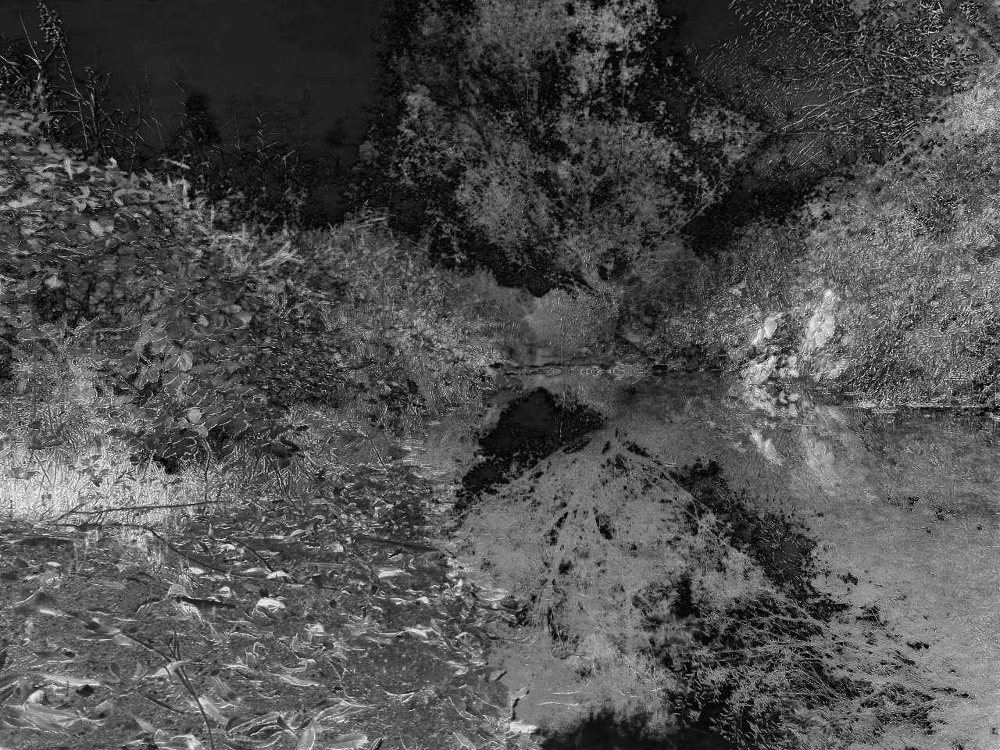
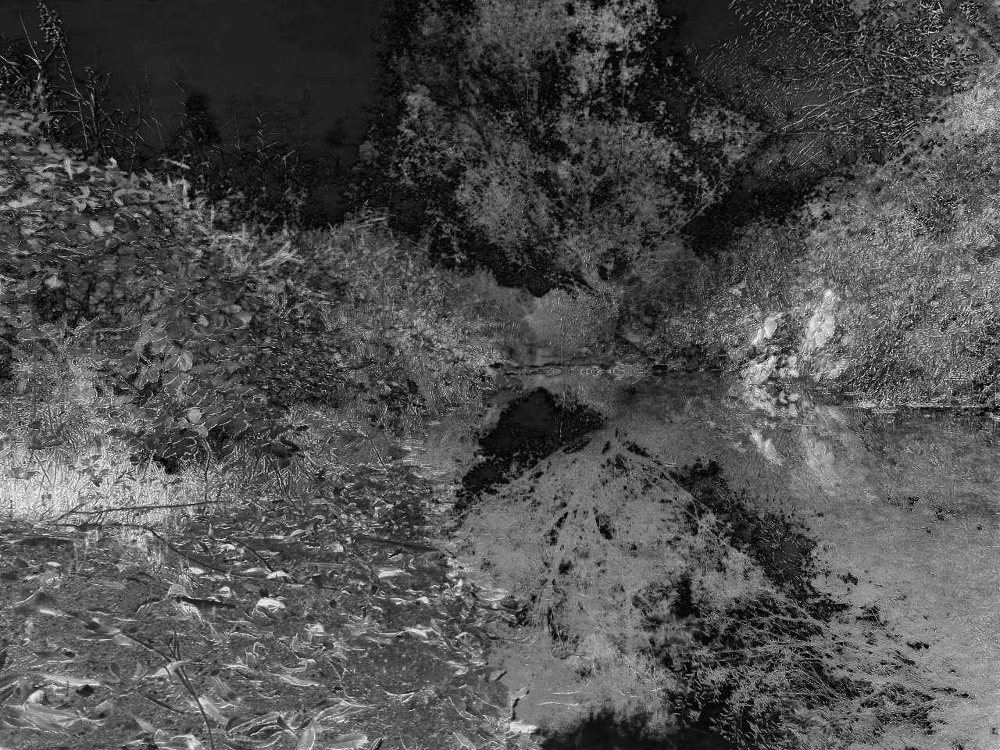
Das Wasser ist ganz klar. Die Zustände haben sich erneut geändert, da es den mit einem Rohr gelegten Kanal nicht mehr gibt, der zuvor das gesamte Wasser des Baches das hier in diesen Abschnitt fließt, geleitet wurde. Somit steht das Wasser generell wieder tiefer.
Es liegen zahlreiche Blätter unter Wasser und am Boden zieht sich eine große Menge Algen in bräunlicher Farbe entlang. Das Wasser fließt enorm ruhig. Auf der Oberfläche treibende Blätter in grün, gelb und braun bewegen sich wie in Zeitlupe dem Strom voran.
Auch hier am Ufer und an den Rändern des Wassers versammeln sich zahlreiche abgefallene Blätter.
Ich höre leises Vogelgezwitscher in der Ferne. Erneut sehe ich den strahlend blauen Vogel zu dem Ast fliegen. Es sieht aus als würde er mich von weitem beobachten.
Alles sieht bunter aus als zuvor. Die Farben des Herbstes kommen zum Vorschein.
Ich hatte gestern Geburtstag und feiere heute mit der Familie. Ein Wall an Vorfreude durchfließt mich. Auch der Hunger macht sich bemerkbar und ich kann fast nur noch an die Kuchen denken, die bereitstehen.
In der Ferne sehe ich eine Ente von einer Seite zur anderen schwimmen. Ein Ast im Baum bewegt sich, wahrscheinlich ein Vogel.
Ein lautes Flugzeug fliegt hier durch und ansonsten höre ich nur das Wasserplätschern und Fließen.
Diesmal fließt ein oranges Blatt vorbei. Die anderen Blätter sehe ich nicht mehr.
Meine Knie schmerzen vom Hocken und ich muss aufstehen. Ich spüre wie das Blut in meine Füße fließt. Es fühlt sich tatsächlich etwas kühler an. Ich bewege sie in der Hoffnung das Kribbeln zu vermeiden.
Wenn ich mich umdrehe, in Richtung Hang der hier zum Bachufer führt an dem ich stehe, dann sehe ich Chaos.
Im Sommer schien alles aufgeräumt und ordentlich. Jetzt sehen die Pflanzen niedergetrampelt, durcheinander, als hätte man seine Haare nicht gekämmt, aus und sie wachsen in den Weg hinein.
Der Weg ist schmaler. Der Boden bedeckt mit kleinen bunten Blättern und an manchen Stellen haben sich Grasbüschel zum Wachsen aus dem Boden gestoßen.
Mir gefällt die Sicht nicht. Es löst ein wenig Stress in mir aus.
Erst jetzt fällt mir auf, dass sich größere Äste im Wasser befinden. Abgefallen von den Bäumen die darüber wachsen.
Ich höre dem Wasser zu und blicke auf die wackelnden Spiegelbilder auf der Wasseroberfläche.
Tag 15
KW 43 – 26.10.2025
 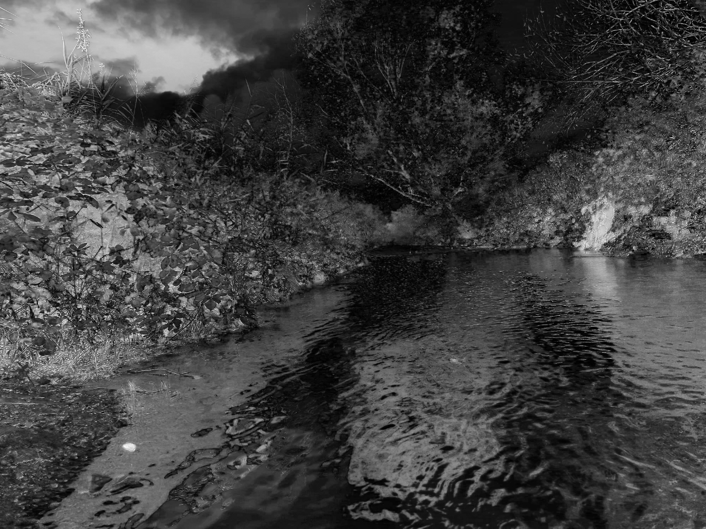
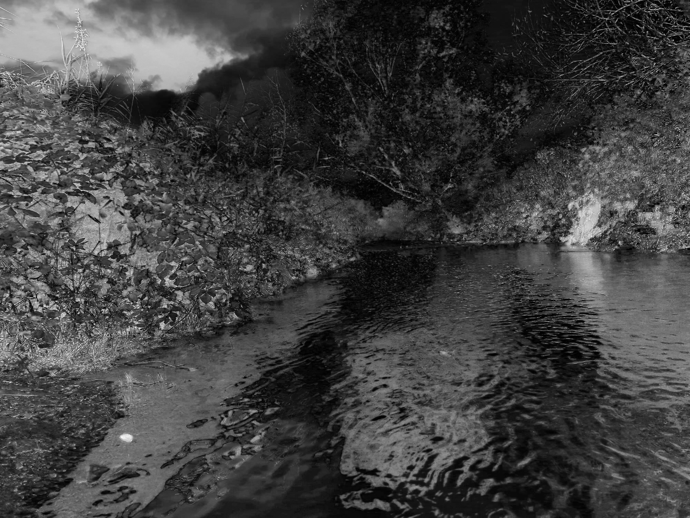
Bewölkt und kalt und windig. Das Wasser fließt schnell. Viele Wellen kräuseln sich über dem Wasser.
Ich weiß genau, dass es keine fünf Minuten sein werden bis meine Hände langsam von der Kälte nachgeben und ich nicht mehr so schnell tippen kann.
Die im Winde tanzenden Ballonfiguren. So windet sich ein langer Grashalm im Wasser.
Kleine Blätter scheinen im Wasser ein Wettrennen zu veranstalten. Es ist so windig, jede Böhe verleiht der Wasseroberflöche ein anderes Muster.
Der einst große, hellgrün bestückte Baum über dem Bach leuchtet in gelblichen Farben.
Ich tippe nur noch mit einer Hand und Wärme die andere. Ich merke, ich bin nicht warum genug angezogen. Vor der Haustür ist es generell immer wärmer als "draußen draußen".
Meine rechte Hand wird langsamer. Ich wechsle die Hände.
Der Weg runter zum Ufer hat sich auch sehr verändert. Man mag kaum glauben, dass es der gleiche Ort ist. Vielleicht liegt es auch an meiner allgemeinen Orientierungsschwäche.
Ich kann auch nicht ganz beschreiben warum. Es ist vieles auf einmal. Die Hecken und Sträucher, das überwachsene, der Sandweg hier runter der viel schmaler ist als zuvor, das Laub, das im Boden steckt.
Der Himmel ist schön blau, jedoch an einigen Stellen bewölkt. Einige Sträucher erkenne ich jedoch bewusst aus dem Sommer wieder. Diese ragen genauso über dem Rest wie zuvor.
Wenn ich stehe, dann merke ich wie der Wind mich versucht umzuhauen. Die süddeutschen Winde können mir nichts.
Ein Blatt fliegt wie eine Feder ins Wasser.
Mir fällt auf, einer der Bäume sieht ohne seine Blätter nun aus wie die peitschende Weide von Harry Potter. Sie würde tatsächlich auch an mich herankommen würde sie ausholen, obwohl sie am anderen Bachufer steht.
Ich sehe eine Krähe/einen Raben. Sogar 2. Er hört sich an wie eine Hupe. Wie die von einem Clown. Was ist mit dem los.
Als hätte er meine Gedanken lesen können, flog er beleidigt davon.
Nun kommt die Sonne hinter mir heraus und ich merke wie sich eine dunkle Wolkenwand vor mir gebildet hat. Innerhalb Minuten.
Ehrlicherweise erschrak ich mich an meinem eigenen Schatten, der gewaltig auf der Wasseroberflöche zu sehen ist.
Ich bewege meinen Arm, um sicherzustellen, dass das meiner ist.
Ps.: er ist es.
Tag 16
KW 44 – 02.11.2025
 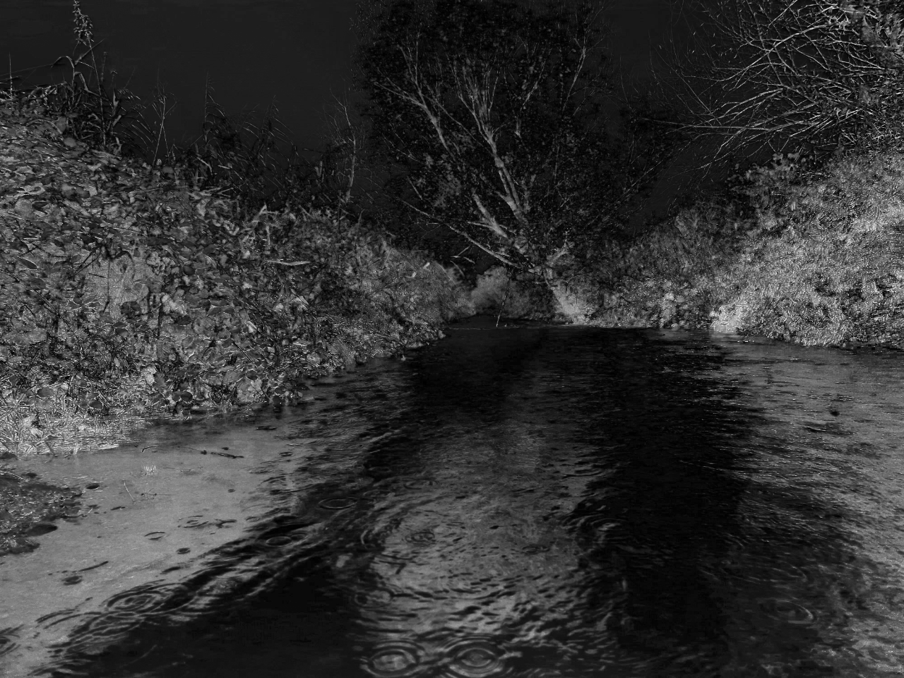
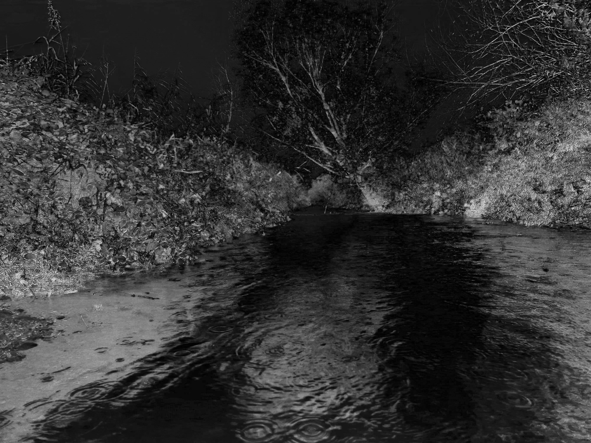
Es regnet in Strömen. In der linken Hand der Regenschirm und in der rechten mein Handy.
Mir ist fast schon zu warm. Warm angezogen und hierher gelaufen. Meine untere Körperhälfte ist durchnässt.
Früher als man an Erkältungen gestorben ist, hätte das was ich mache als Suizidversuch gegolten.
Das Wasser steht sichtbar höher. Die Oberfläche bildet viele kleine und große Kreise aufgrund der Wassertropfen, die hinab fallen.
Ich höre das Wasser sprudeln zu meiner rechten, da wo es sich durch ein kleines Tor presst.
Die Wassertropfen prasseln laut auf meinen Regenschirm. Der kleine Wasserfall wird komplett übertönt.
Ich höre einige Vögel. Natürlich jetzt wo es in Strömen regnet. Man mag glauben sie würden sich verstecken und bei schönem Wetter herauskommen. Doch bei schönem Wetter waren sie kaum zu hören. Nun geben sie ein Konzert.
Ich spüre nun bereits meinen kleinen Finger nicht mehr. Meine Glieder, vor allem mein Rücken, schmerzt gerade sehr. Ich würde gerne sitzen, doch alles ist nass.
Das Wasser ist trüb. Braun. Jedoch ein anderes Braun als ich sonst immer sah. Es scheint fast nicht natürlich. Ein schönes braun. Kein ekliges. Kupfern. Wie ein guter Schwarztee durch den die Sonne strahlt.
Der Himmel ist einfach nur grau. Ein helles grau. Man sieht nicht den Himmel, aber auch keine spezifische Wolke. Nur eine Wand, die sich unendlich durchzieht.
Ein kleines Blatt nach dem anderen zieht an mir im Wasser vorbei.
Ich sehe alles im Moment. Nichts was ich jetzt sehe wird je wieder so sein. Kein Regenmuster im Wasser wird je dem einen gleichen.
Drei kleine Blätter fallen zu Wasser.
Es ist beruhigend sich auf die fallenden Tropfen zu konzentrieren. So spüre ich meinen Rücken für einen Moment nicht mehr.
Finden konnte ich noch keinen Vogel. Aber sie sind hier gegenüber von mir.
Keine Blumen, keine Blüten. Der Sommer war so schön. Doch gefühlt nur einen Moment lang.
Tag 17
KW 45 – 09.11.2025
 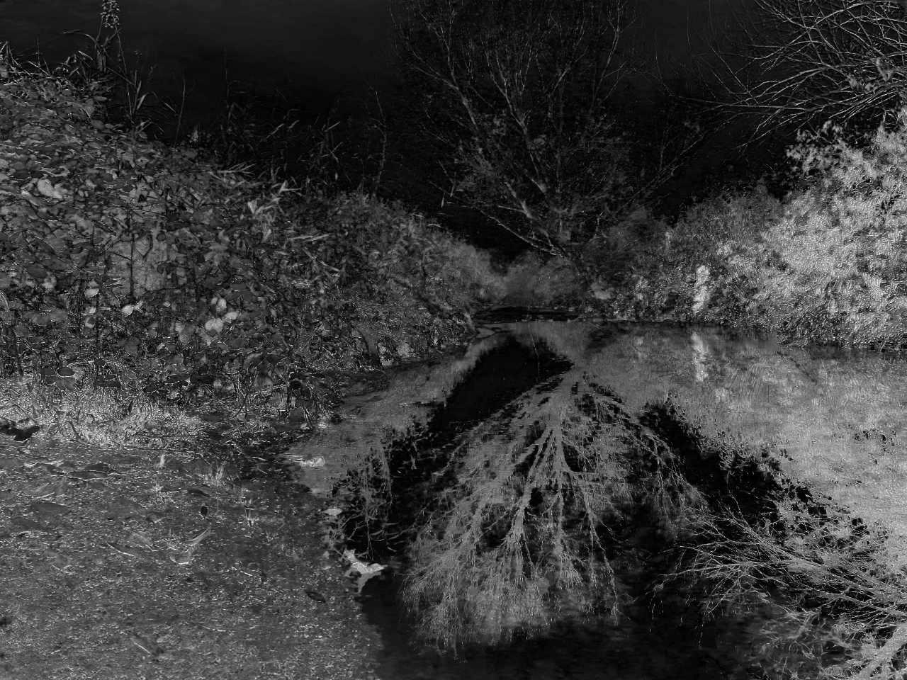
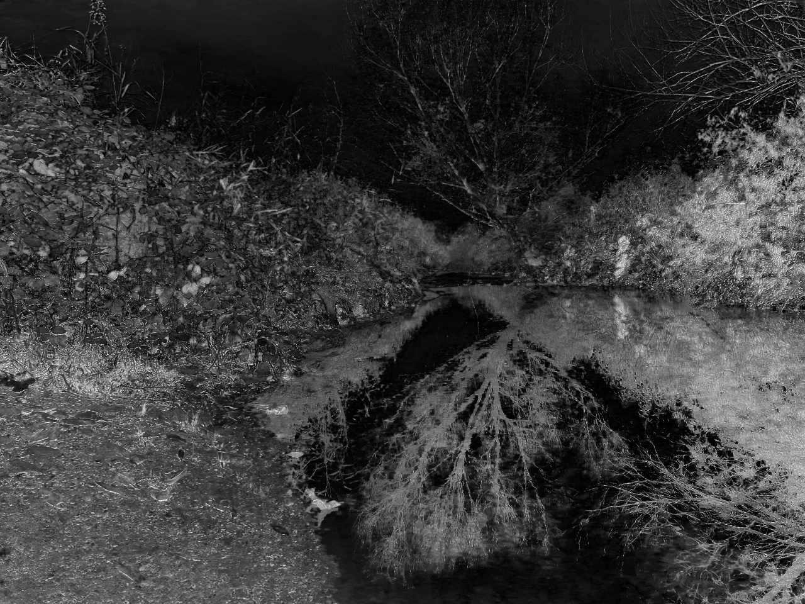
Das Wasser ist super klar. Ich sehe jeden Zentimeter des Bodens. In den verschiedensten Brauntönen.
An einigen Stellen tümmeln sich Blätter und Pflanzenstängel. Blätter treiben unter Wasser in Fließrichtung.
Man kann den ganzen Baum in der Spiegelung der Wasseroberfläche sehen.
Es ist relativ warm heute. Vor allem im Vergleich zur letzten Zeit. Ich bin mal wieder zu warm angezogen. Ich verschätze mich andauernd.
Es scheint mittlerweile langweilig. Kein Leben, zumindest keines, was ich mit meinen Augen sehen kann.
Pflanzen werden mal nicht mitgezählt.
Dennoch fühle ich mich nicht allein. Es fahren mehr Autos als sonst hier vorbei. Jedoch fühlen sie sich nicht an wie Leben.
Auch wenn viele sagen, der Herbst ist die schönste und bunteste Jahreszeit. Das kann ich nicht zurückgeben. So traurig und tot. Matschig und noch mehr traurig.
Keine Fische, keine Vögel, keine Fliegen, auch wenn sie super nervig waren.
Die Luft riecht verdorben. An manchen Stellen bilden sich Mini Tornados im Wasser. Aber die "heuigen" Hinterlassenschaften eines Tieres sind noch immer zu sehen. Auch wenn diese bereits größtenteils von Gras, welches darüber gewachsen ist, bedeckt sind.
Normalerweise ging die Zeit immer zügig voran, jedoch merke ich nun, wie sie sich zieht, da ich Schwierigkeiten dabei habe noch weitere Dinge zu finden zum Schreiben.
Der ganze Schlamm erinnert mich daran meine Stiefel zu putzen. Das werde ich aber bald wieder vergessen haben. Dann fällt es mir wieder ein, wenn ich außer Haus gehe.
Es ist so wenig Wasser im Bach, dass ich unter der Stelle, an der ich immer stehe, eine weitere, nun freie, "Stufe" aus Dreck und Steinen sehe. Es wirkt gar nicht so, als wäre so wenig Wasser im Bach. Jedoch ist das meine Bestätigung.
Tag 18
KW 46 – 16.11.2025
 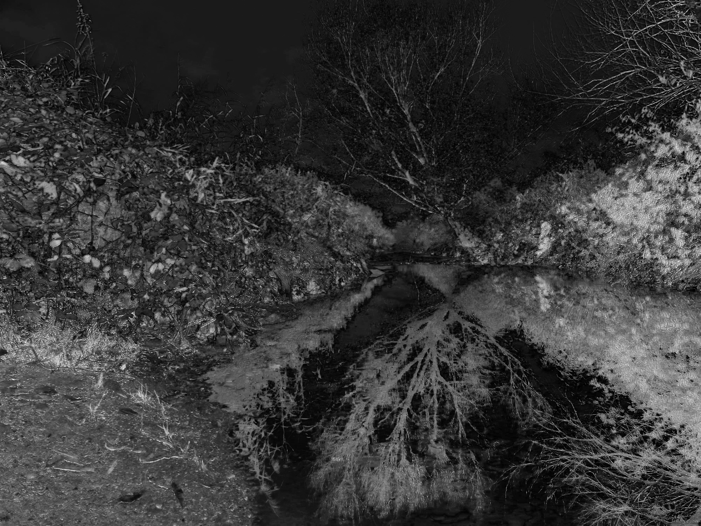
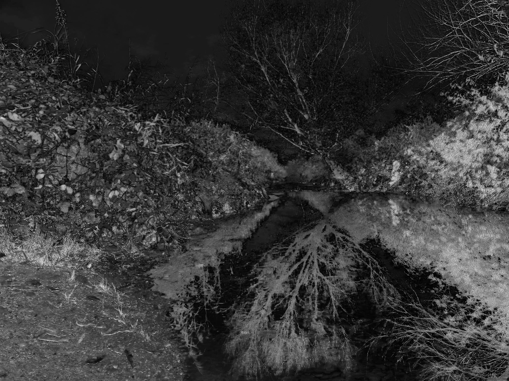
Ich sehe etliche Vögel. Schon beim Herlaufen flog ein ganzer Schwarm, geschätzt, Blaumeisen empor. Nun sitzen sie hier in den Bäumen und reden miteinander. Vielleicht regen sie sich darüber auf, dass ich jetzt hier stehen muss.
Der Wasserstand scheint gleich zum letzten Mal. Auch die Klarheit des Wassers scheint sich nicht verändert zu haben.
Ich sehe nach dem eisblauen Vogel, jedoch ist er nicht zu sehen. Dafür fliegen mir immer wieder kleine Meisen über den Kopf hinweg.
Ich höre auch etwas gegen Holz klopfen. Als würde einer seinen Schnabel gegen einen Ast klopfen.
Ein weiterer Vogel, ein anderes Singen als die anderen Vögel hier.
Die Bäume mit kaum Blättern sind gefüllt mit Leben. Eine weitere andere Singart ist zu hören. Sie scheinen mich alle von oben zu beobachten.
Ich könnte ihnen die ganze Zeit zuhören und zuschauen, wie sie von einem Baum zum anderen fliegen.
Da sehe ich einen Fisch. Ich dachte zunächst es wäre ein weiteres Blatt im Wasser. So schnell habe ich es wieder aus den Augen verloren.
Ich schaue umher, jedoch sehe ich keinen mehr. Es war kein Fischchen, sondern ein längerer Fisch. Vielleicht so lang wie meine Hand. Ist schwer zu beurteilen.
Der rege Monolog eines Vogels, der sich aufzuregen scheint, ist nicht zu überhören. Die Vögel sind so winzig.
Ich merke langsam wie die Kälte durch meine Kleidung sickert. Es ist definitiv kühler als das letzte Mal.
Meine Schuhe sind unglaublich matschig. Ja, ich habe sie immer noch nicht sauber gemacht. Ich hatte recht, das habe ich zuhause wieder vergessen.
Wenn ich mich nur auf das Rauschen des Wassers fokussiere, wirkt alles so entspannt.
Mir fällt auf, wie ich immer mehr einfach zuhöre und hinschaue als direkt zu dokumentieren. Das habe ich anfangs immer gemacht. Jetzt halte ich inne und erlaube mir auch mal länger nicht zu tippen.
Tag 19
KW 47 – 23.11.2025


Es ist grau. Es ist kalt. Jeder Tag sieht aus wie der andere. Man möchte sich in warme Klamotten und eine weiche Decke einwickeln. Zumindest will ich das gerade.
Das Wasser klar, der Boden dreckig. Der nasse Schlamm am gefrieren.
Der Himmel ist ganz weiß vor lauter Wolken. Die Sonne zu sehen wäre schön.
Meine Finger schon sehr kalt, sie bewegen sich viel langsamer.
Ein relativ dicker Baumstumpf liegt rechts, weiter hinten im Wasser und ragt zum Teil heraus.
Mein Schal über Mund und Nase. Meine Brille beschlägt mit jedem Ausatmen.
Ein Vogel ist immer mal wieder zu hören. Piep piep piep. Immer wieder im Dreierschritt. Piep piep piep. Wenn ich antworte, kommt es wieder zurück. Piep piep piep.
Hier liegt ein bisschen Holz. Geäst. Ganz klein. Ich dachte erst das wären die Füße einer Taube. Es ist zum Glück nur Holz.
Ich werde schauen wie lange ich meine Hand in das Wasser legen kann. 10 Sekunden. Und das waren schon 5 Sekunden zu viel.
Wie manche Menschen Frühjahrs Winterschwimmen oder so machen können ist mir ein Rätsel. Ich würde kollabieren. Und das nicht weil ich Cola und Bier gleichzeitig getrunken habe.
Aber, die Hand fühlt sich lebendiger an als meine rechte, die nicht im Wasser war. Sie ist langsam vor Kälte. Meine Wasserhand ist schnell und beweglich, aber kälter. Interessant.
Der dickste Teil des Baumes der direkt vor mir im Wasser spiegelt sieht aus wie einer der laufenden Bäume aus Herr der Ringe/Hobbit (sorry). Als würde er nach links stampfen. Leicht gebückt. Arme leicht nach vorne ausgestreckt.
Immer wieder wechseln sich Rauschen des Bachs, eines Flugzeugs und von Autos in meinem Hörfokus ab.
Ich hoffe die Zeit ist bald vorbei, denn meine Hände sterben. Ja, ist sie gleich. Sehr gut. Erst mal direkt zuhause aufwärmen. Und es wird noch kälter werden.
Tag 20
KW 48 – 30.11.2025
 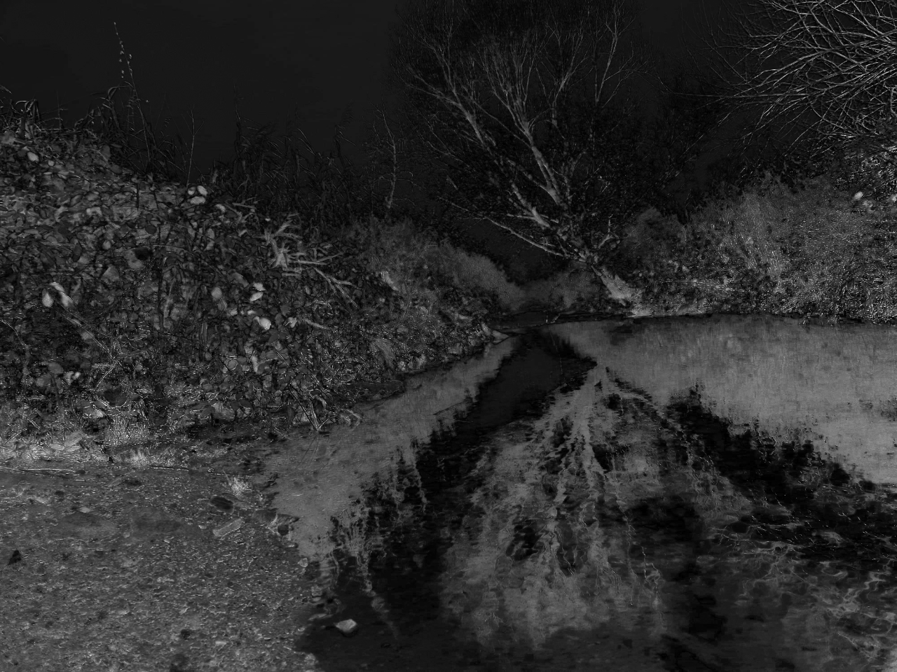
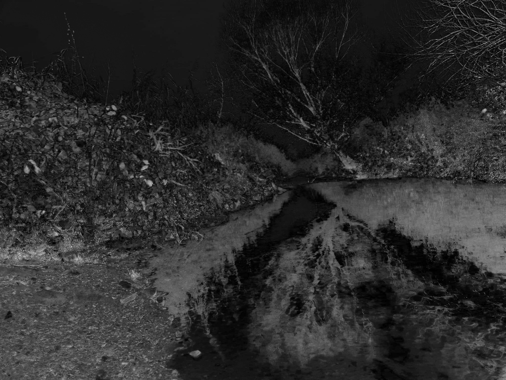
Es ist kühl, aber trotzdem um einiges wärmer als erwartet.
Die Sträucher abgeholzt oder zertrampelt. Nicht grün, sondern gelblich.
Auch weiter hinten erinnert mich die Farbe an Westernfilme. Dieses gelbbräunliche Holz. Eher leblos. Aber immer noch ein Tick lebendiger.
Die Farben scheinen warm, nicht kalt wie bei einigen vielen Malen davor. Vor allem der Baum gegenüber von mir, der, der aussieht wie die peitschende Weide von Harry Potter, hat einen eigenartigen Gelbton. Es sieht aus wie aufgepinselt. Dreckiges Gold. Je länger man schaut, desto grünlicher wirkt es.
Viele Blätter darunter scheinen nun wieder sehr lebendig. Schöne matte Grüntöne. Von mittelhell zu dunklen, in den verschiedensten Ausführungen.
Die Rinde von einem anderen ("richtigen") Baum (die peitschende Weide scheint eher ein verwildertes Chaos aus einer Vielzahl von knubbeligen Neusprießungen von vorher abgeschnittenen Ästen zu sein, die sich in alle Richtungen biegen) wirkt so falsch.
Natürlich ist sie echt, jedoch hätte ich einen Baum mit genau dieser Musterung und Farben gemalt, hätte ich es als misslungene Darstellung betitelt und neu angefangen.
Vielleicht (sehr wahrscheinlich) ist meine Wahrnehmung bzw. mein Bild eines Baumstamms verzogen durch die üblichen Darstellungen einer Rinde.
Während der Baum einen gewissen Braunton hat, hat die Rinde einen etwas dunkleren Braunton der selben Art. Und immer mal wieder erscheinen "Augen"-Musterungen.
Doch dieser Baum sieht nicht so aus. Zwischen der dreidimensional herausragenden Rinde ist der Baum braun. Die Rinde, längliche und dünne Rechtecke, die den Biegungen des Stammes folgen, sind grünlich, manchmal etwas grau wirkend. Und unten am Stamm scheint sich die Rinde teilweise zu überkreuzen.
Wie ein Muster auf einer Linzertorte.
Dort hat die Rinde auch eine sehr ähnliche Farbe zum Rest, auch bräunlich.
Ich denke nicht, dass ich zuvor einen Baumstamm so gründlich beobachtet habe.
Meine Hände werden langsam sehr kalt, ich merke es aber erst jetzt nach meiner Beobachtung und Schilderung.
Tag 21
KW 49 – 07.12.2025
 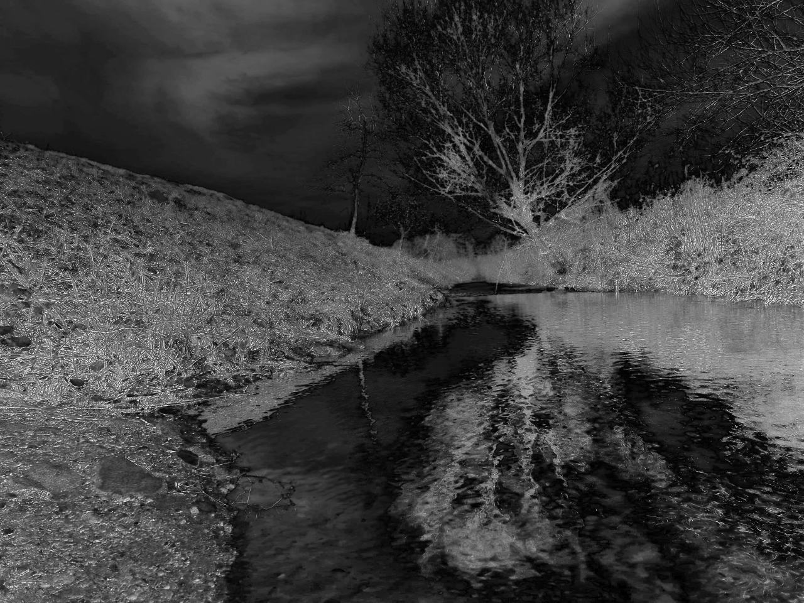
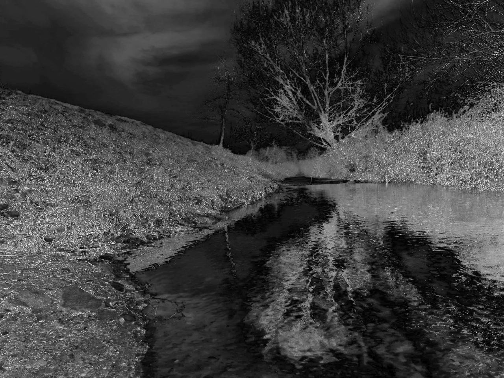
Mittlerweile ist es schon ein Stückchen kühler geworden. Wind weht keiner. Alles ruhig. Gelegentlich fährt ein Auto vorbei. Sonst nur Wasser.
Die Sträucher links sind so kaputt und abgestorben, dass die Treppe zum Wasser ein paar Meter weiter ausgezeichnet zu sehen ist.
Das Wasser klar, viel mehr Blätter sind am Bachboden zu sehen.
Diesmal fällt mir ein größerer roter Stein auf. Er steckt, genau wie die anderen Steine, im Boden unter dem Wasser.
Ansonsten fallen mir die bunten winzigen Steinchen leicht unter der Wasseroberfläche auf. Die meisten sind weiß, doch auch braune, rote, grüne und dunkle Steinchen sind zu sehen.
Ich sitze ruhig da und ein paar Vögelchen haben sich dazu entschieden, sich auf die Bäume in meiner Nähe zu gesellen. Sehen tue ich sie aber nicht. Ich kann nur die Richtung ungefähr abschätzen.
Ich kann nicht so ganz abschalten heute, da ich an die vielen Dinge denken muss, um die ich mich noch kümmern muss. Zuhause und für die Uni. Ich bin nicht entspannt. Und ich bin mir sicher, dass ich auch nicht mehr entspannen werde während ich hier sitze.
Die Oberfläche bildet kleine Wirbel, die an mir vorbeiziehen.
Auf einem großen Stein wächst Gras. Auch unter dem Wasser. Dieses schwankt leicht hin und her. Nicht rhythmisch, nicht synchron.
Außer den gelegentlichen Blättern und kleinen Stöcken scheint hier auch nichts im Wasser zu schwimmen, was mein Auge wahrnehmen kann.
Heute fühlt es sich allein an. Die Vögel sind auch still. Das Wetter trüb. Und es ist einsam.
Es kriechen weitere Blätter am Boden des Baches entlang. Es sieht wirklich wie kriechen aus, als würden sie sich auf allen Vieren durchkämpfen, da sie sich so umher winden.
Ganz amüsant um ehrlich zu sein.
Meine Schuhe sind immer noch enorm dreckig.
Tag 22
KW 50 – 14.12.2025
 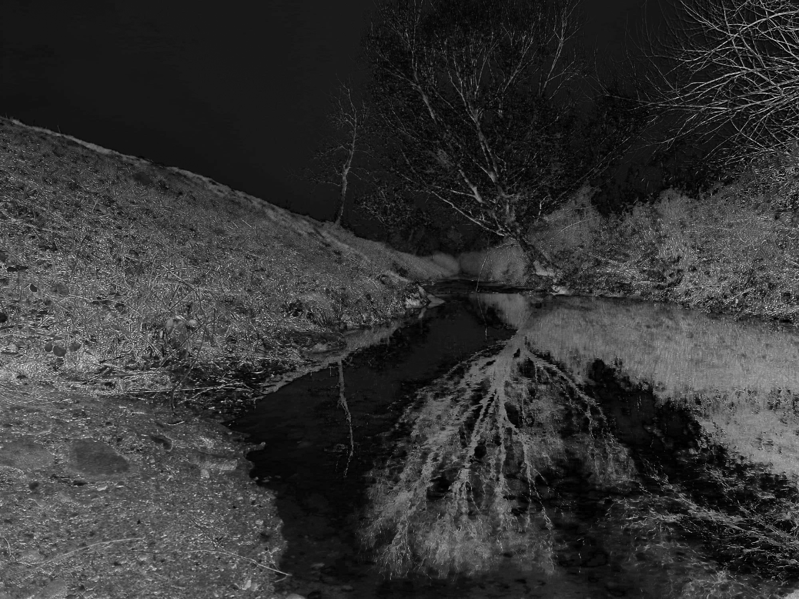
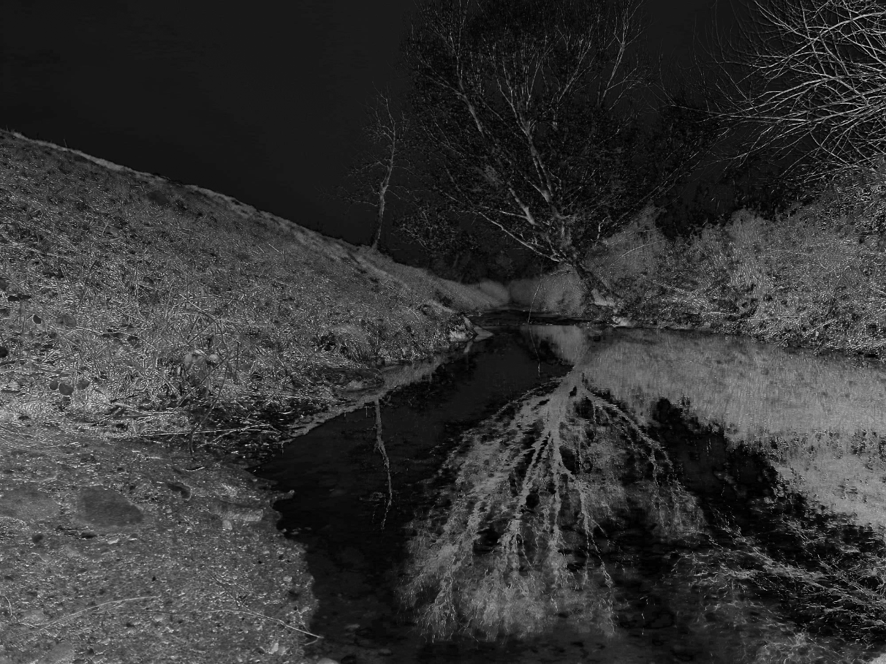
Einige Vögel zwitschern leise. Sie sind weiter weg.
Das Gras wächst in den verschiedensten Grüntönen. Aber nicht geordnet. Als hätte jemand mit einem Pinsel die Farben mal hier und mal dort hingekleckst. Es sind relativ helle Grüntöne, während auf der anderen Uferseite die Blätter so dunkel sind. Ein richtiger Kontrast.
Es ist angenehm sich auf die Spiegelungen im Wasser zu konzentrieren. Man sieht den großen Baum und die Pflanzen vom anderen Ufer. Das Wasser kräuselt sich langsam und die Spiegelungen verzerren sich dauerhaft. Nicht viel, man erkennt alles ziemlich gut.
Es bilden sich viele kleine Mini-Tornados im Wasser. Kaum mehr schwimmen Blätter oder Pflanzen auf dem Wasser entlang vorbei an mir. Es sind verschiedene Fließmuster zu erkennen. Das Wasser treibt in ganz unterschiedliche Richtungen, wenn man genauer hinsieht. Die Hauptfließrichtung ist von rechts nach links von dort aus wo ich stehe.
Während der Weg, den ich hinunter und hinauf zum/vom Bach nehme, eher sandig ist, ist der Boden daneben am Wasser sehr schlammig. Im Schlamm sind Abdrücke, die ich nicht zuordnen kann.
Auf einmal fällt mir ein recht großer, grauer Backstein auf. Wie er einfach inmitten der abgeholzten Sträucher liegt. Ich kann mir auch nicht vorstellen wo er eigentlich hätte landen sollen hier in der Nähe.
Ich merke, ich habe über die ganzen Wochen immer nur in die Richtung des Bildes geblickt und ab und zu auch genau gegenüber. Da wo die peitschende Weide vom Ortenaukreis steht. Ich kann wahrscheinlich an einer halben Hand abzählen wie oft ich richtig nach rechts geblickt habe. Ich hätte mich mehr umschauen können, wobei ich hier am Ufer in einer Art "Tal" stehe.
Der Weg der vom eigentlichen Weg zum Ufer führt, verläuft relativ steil nach unten. Fast mehr, als den Bach etwas hinauf bis zur Wehranlage und etwas drüber den Weg oder in den Himmel, kann ich wohl nicht sehen.
Spinnenweben mit Tau welches gefroren ist. Wie kleine Perlenketten aufgehangen an den am Ufer noch stehenden einzelnen Pflanzenstilen.
Ich lasse sie in meiner Hand auftauen und sie verschwinden komplett. Kein dünner Faden bleibt übrig.
Tag 23
KW 51 – 21.12.2025
 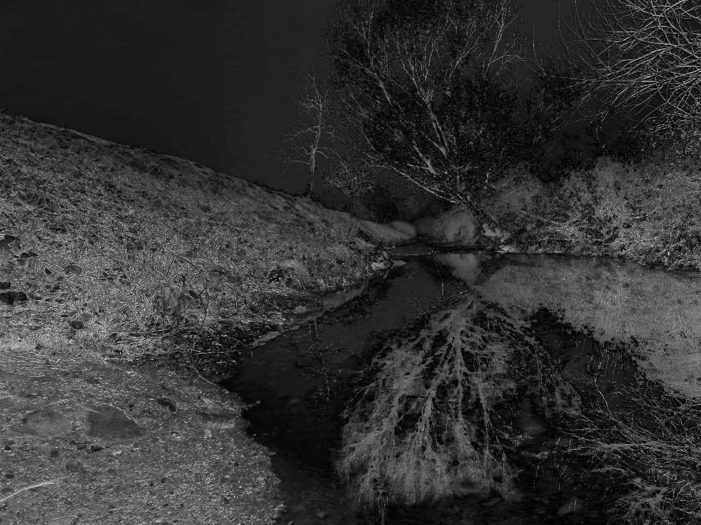
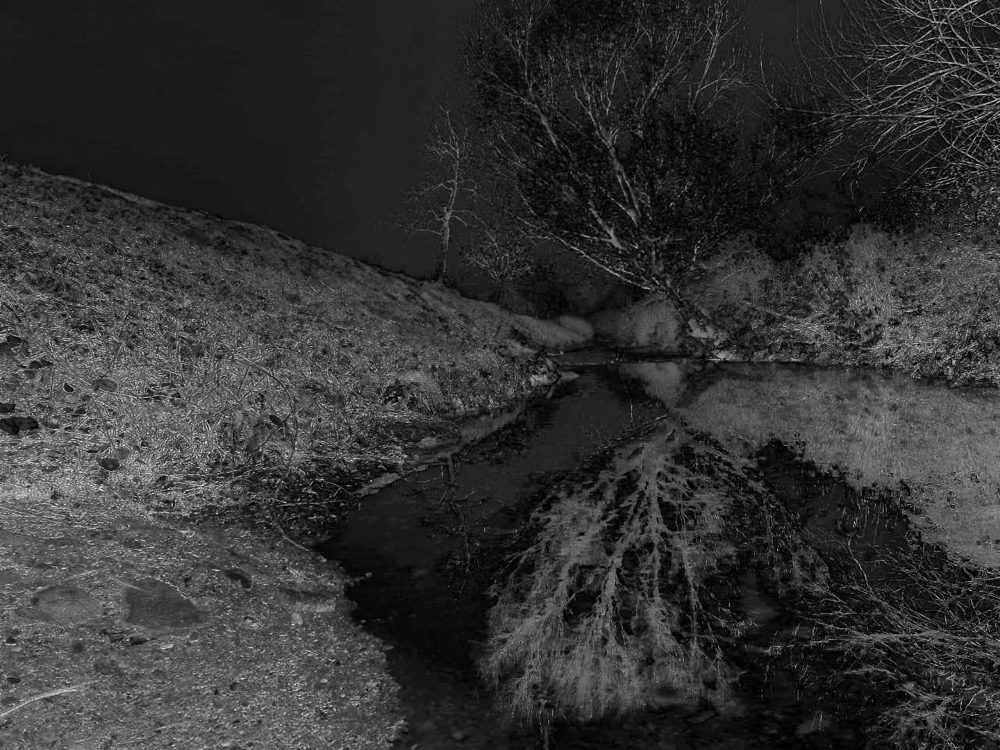
Auf dem Feld nebenan liegt ein toter Greifvogel. Ich tippe auf einen Mäusebussard, weiß es aber nicht genau. Ich frage mich wie es wohl gestorben ist.
Auch wenn es Feind für viele Tiere ist, so hat es auch das Recht zu leben. Und leben bedeutet auch zu essen.
Da Wasser war lange nicht mehr unklar. Alles sieht unverändert für mein Auge aus.
An der Treppe ein paar Meter weiter, die man nun sieht, da das Gestrüpp abgeholzt wurde, erkenne ich einen grellen gelben Streifen. Wahrscheinlich eine Anzeige für den Wasserstand.
Auch von hier sehe ich, dass die Stufen von Moos bedeckt sind. Das Wasser hat es während der Zeit meiner Dokumentationen nicht einmal zur zweiten gerade sichtbaren Stufe geschafft.
Es gab Tage an denen es viel geregnet hat, aber nichts kam einer Überschwemmung auch nur in die Nähe.
Keine Fische. Ob sie sich woanders aufhalten? Oder sind sie alle tot?
Wieder so leblos. Nur immer wieder Geräusche von Autos wie sie durchfahren oder bremsen. Oder LKWs, die allgemein komische, schwerfällige Geräusche von sich geben. Ich vergleiche es mit einem menschlichen Seufzen.
Das einzige sich farblich abhebende in dieser Gegend sind die knallroten Hundekotbeutel die rechts an einem Mülleimer auf der Seite des anderen Bachabschnitts, welcher seit einigen Wochen abgeschirmt wurde, um das Wasser in meinen Abschnitt fließen zu lassen, hängen.
Ob ich nach diesem Projekt gelegentlich weitere Bilder aufnehmen werde? Mich würde der Übergang von Winter zu Frühling interessieren. Wenn alles wieder aufwacht, sprießt und gedeiht und die Umgebung von der hoffnungsgebenden Sonne umgeben wird.
Vielleicht werde ich das tun.
Ich mag es mehr wenn es kühl ist, anstatt heiß. Jedoch sehne ich mich nach dem Gefühl, wenn die Sonne leicht ins Gesicht strahlt und dieses wärmt.
Gerade ist es bewölkt. Nur eine hellgraue Wand, egal wohin man schaut. Doch die Kälte, die nur mein Gesicht trifft, da ich sonst sehr warm angezogen bin, tut auch unglaublich gut. Während sie nicht kalt genug ist, um meinen Händen Schmerzen zuzufügen.
Tag 24
KW 52 – 28.12.2025
 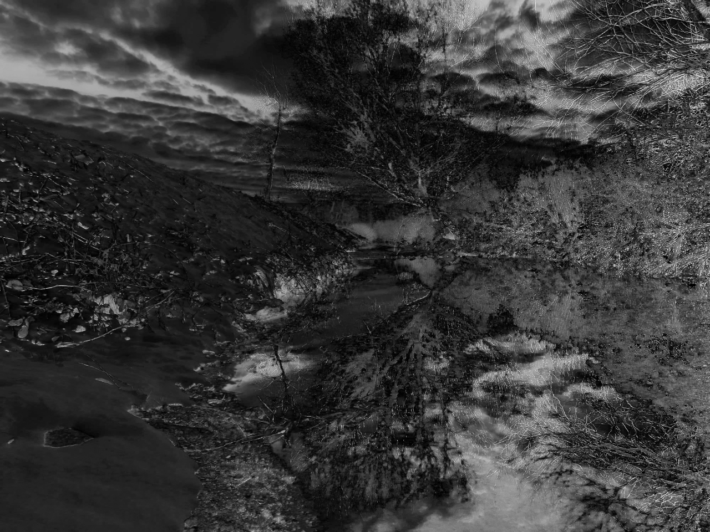
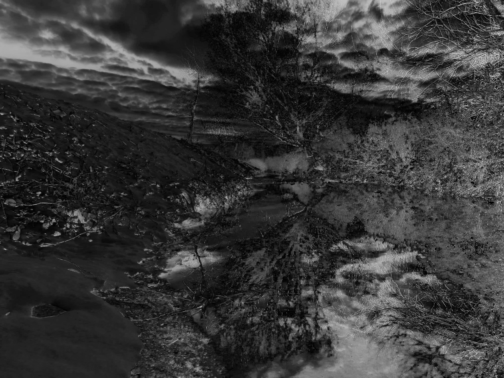
Nun ist der Winter richtig eingefallen und alles ist mit Schnee bedeckt.
Die Sträucher sind noch immer weg - ob abgeschnitten oder zertrampelt weiß ich nicht. Sehen wie abgebrochen aus. Auf jeden Fall sind sie weg und es bietet sich eine umfangreiche Sicht. Das werde ich aber bereits erwähnt haben.
Mir ist zu warm. Ich habe mich sehr gut eingepackt. Zu gut.
Es sieht hier so anders aus, doch trotzdem sehr ähnlich. Dieser Teil war für die Triebjagd abgesperrt. Auch jetzt steht noch ein Schild, Achtung Jagd, Lebensgefahr. Jedoch keine Absperrung, und Schüsse höre ich auch keine.
Ich hoffe sie haben das Schild einfach vergessen. Wobei ich nicht unbedingt aussehe wie ein Reh oder ein Wildschwein.
Das Wasser treibt langsam, es herrscht kaum Wind. Einige Pflanzen haben noch grüne Blätter. Alles andere sieht sehr tot aus.
Ich werfe einen Schneeball ins Wasser und er löst sich ohne ein "Plopp" Geräusch zu machen im Wasser auf.
Ich frage mich, ob der Schnee kälter ist oder das Wasser.
Der Schnee ist schon unglaublich kalt. Das Wasser genauso.
Nur wenige Sekunden und meine Hand schmerzt.
Der Schnee schien kälter, jedoch hielt der Schmerz nicht besonders lange.
Der Kälteschmerz vom Wasser hält noch immer an.
Zu hören ist nur das Rauschen des Wassers. Keine Fische. Keine Autos. Kein Wind. Kein Flugzeug. Keine Vögel.
Selbst Blätter im Wasser treibend sind keine zu sehen.
Das Wasser ist klar. Abgestorbene Teile von Pflanzen, die allmählich unter dem Bachbodendreck verschwinden und vereinzelte Steine an denen Blätter hängen geblieben sind.
Jetzt kommt gerade noch die Sonne heraus und der Schnee glitzert.
Alles wirkt freundlicher.